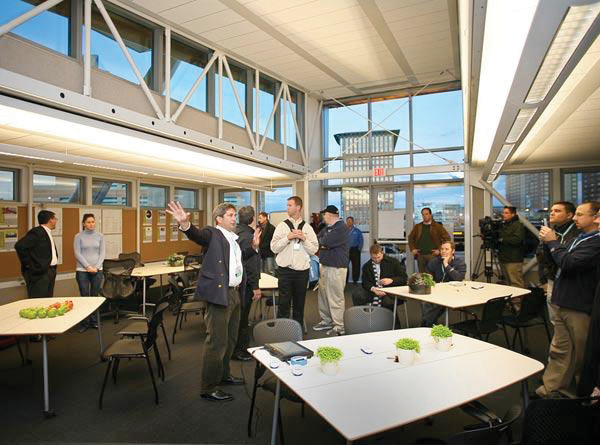
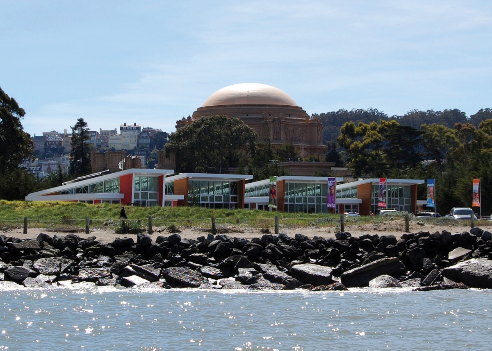
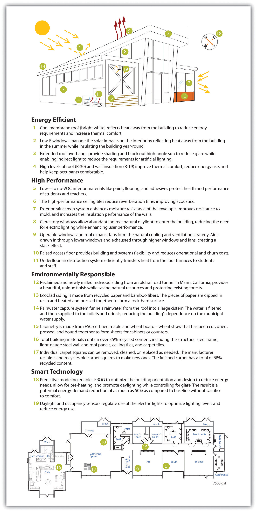
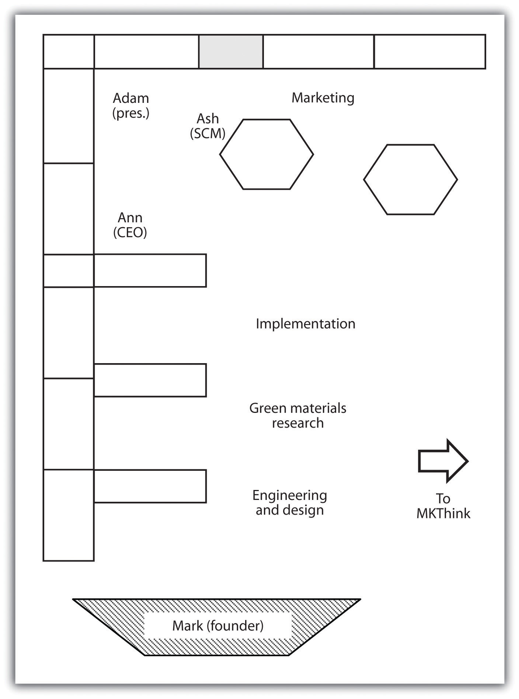
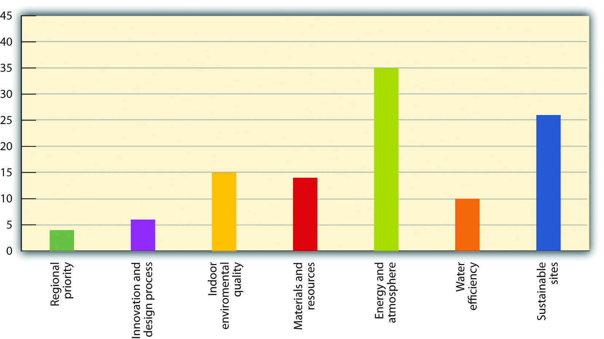
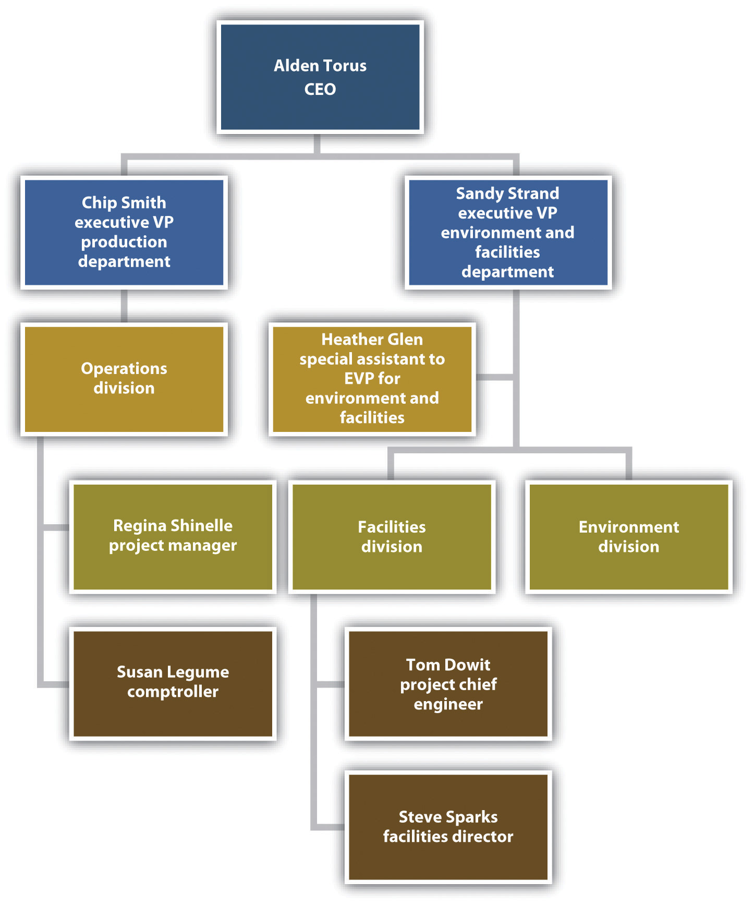

Buildings represent significant opportunities to reduce adverse environmental impacts and provide healthier work and living spaces through new design and renovation. Building construction is the largest sector of US manufacturing. The industry consumes approximately 40 percent of all energy, 72 percent of electricity, and releases around 28 percent of all greenhouse gas emissions. Typically overlooked are buildings’ additional water consumption and landfill waste generated during construction and renovation activity. Given the high proportion of time—estimated to be 90 percent—people spend indoors, materials and energy choices for buildings are tied closely to health and productivity. There are many ways innovative sustainability practices can target building design and interior furnishings to make positive changes. In fact, the building sector presents some of the most accessible opportunities to develop innovative strategies for increasing profits and addressing environmental and related community quality-of-life concerns.
In this chapter we look at building industry issues from three different standpoints. The Project Frog case illustrates the benefits and challenges facing a new company that offers state-of-the-art building design using optimally clean and efficient energy design and materials. Initially targeting the education market to help reduce the number of students housed in temporary trailer classrooms, Project Frog offers a dramatically more energy efficient and healthier alternative to school districts that need to expand classroom space. This chapter also provides background information on LEED, the US Green Building Council’s standards for Leadership in Energy and Environmental Design. The LEED discussion is followed by a hypothetical, but nonetheless realistic, case called Greening Facilities: Hermes Microtech Inc. that provides insight into building design decision-making processes. The background note subsequent to the Hermes case is titled “Environment, Entrepreneurship, and Innovation: Systems Efficiency Strategies for Industrial and Commercial Facilities” and offers additional information about why building redesign can be very challenging unless systems thinking is applied. The chapter ends with a case on Shaw Industries, a company that addresses building interior furnishing choices through innovative redesign of carpeting systems.
Project Frog was an innovative designer of kits to rapidly build energy-efficient, greener, healthier, and affordable buildings. The company was transitioning from start-up to the next phase of growth just as the 2008–10 economic recession brought virtually all new building construction to a halt across the United States. Conditions forced the company to rethink strategy, conserve cash, and further refine its product and its processes. The company’s Crissy Field project, completed in early 2010, provided a critically important demonstration of the company’s designs, and as the economy began to turn around in 2010, geographic expansion and new markets segments—possibly government, retail, and health care—were planned. Architect, designer, and founder Mark Miller; president Adam Tibbs; and new CEO Ann Hand also hoped to meet more aggressive margin targets that would enable the company to triple revenue and be profitable early in 2011, only five years after start-up. Venture capitalMoney provided to start-ups, often at high risk but with the possibility of high returns, in order for those companies to grow and bring new products to market. funding from RockPort Capital Partners and investor exit expectations required rapid ramping up of projects in the short run. Miller summarized the overlap of Project Frog’s products and lead venture capital investor’s interests: “Their vision for energy and resource efficiency and innovative products is perfectly aligned with the Project Frog approach: to be better, greener, faster and cheaper.”Project FROG, “Project FROG, Makers of Smart Building Systems, Closes Series B Funding with RockPort Capital Partners,” news release, Business Wire, November 19, 2008, accessed January 28, 2011, http://www.thefreelibrary.com/Project+,+Makers+of+Smart+Building+Systems,+Closes+Series+B...-a0189242085.
In late spring 2010, having just moved from an operating role to a board position, Miller was focused on strategic concerns and how best to explain and sell his product to a broader range of buyers, including the military and potentially disaster-relief agencies. The Project Frog office, a short walk from San Francisco’s Embarcadero district, was informal and open. Although Miller occupied the only office with a door, it was bounded by two glass walls and a clear acrylic panel he used as a whiteboard. He could often be found crisscrossing the office or standing at someone’s workstation or at the table where Tibbs sat. Meanwhile, new CEO Ann Hand had set up her computer, sharing the long table with Tibbs. She sought to translate her experience at BP as senior vice president of global marketing and innovation into a strategy for Project Frog to build its brand and scale up. The senior team saw huge potential in Project Frog, but they had many decisions to make and priorities to set. Most important, they wanted to ensure Project Frog met key business goals as they focused on preparing to give the venture capital investors a successful exit in just a few years, either taking the company public or finding a buyer.
Mark Miller was no stranger to new design and enterprises in architecture. He graduated from Haverford College in 1984 and earned his master’s in architecture and a prestigious Keasbey Fellowship at Cambridge University. He went to Kuala Lumpur as a Henry Luce Scholar, helping design refugee camps among other projects and deepening his strong interest in the relationship between culture and architecture. He also was certified by the American Institute of Architects. Miller later served as director of corporate and technology projects and director of the Asia Projects Group for the firm Kaplan McLaughlin Diaz in San Francisco, where his portfolio included Euro Disney. In 2000, he used $50,000 in personal savings to start MKThink, a design and architecture firm in San Francisco focused on innovative architectural design. Staff that included anthropologists conducted careful human behavior research to understand what people in work spaces truly need for high productivity and high performance. MKThink designed advanced offices and campuses for Sun Microsystems and General Electric’s Warren Tech Center in Michigan and worked extensively with Stanford University on several projects, including a dozen at the law school, work for the education and engineering schools, and the business school’s relocation analysis.
Around 2000, Miller began to think seriously about the education market and temporary or portable classrooms, the trailers that frequently begin as stopgaps and become permanent features of many schools despite their unhealthy interior environments and energy inefficiency. Miller said, “Design should speak to the issues of the day, and technology needs to enable the human condition, not dominate it. So what are the issues of today? Well, we’ve got a problem: 35% of the kids in the state of California go to school in out-of-date trailers. That’s an issue of the day. It’s how do you educate kids in public schools and what are their facilities like in solving that systematically? We have the technology, we have the knowledge. We can solve this.”Andrea Larson and Mark Meier, Project FROG: Sustainability and Innovation in Building Design, UVA-ENT-0158 (Charlottesville: Darden Business Publishing, University of Virginia, 2010). Other quotations in this section, unless otherwise noted, also refer to this case study.
Solutions oriented, Miller saw an opportunity to meet the challenge. While relatively cheap, how well did existing buildings address how students learn and what teachers need to be high-performing instructors? How could technology and design come together to create healthier schools while addressing the desperate need for more classrooms as well as rising and more volatile energy costs? Why accept existing answers? Smart buildings were emerging as alternatives. Estimates were that school overcrowding and insufficient tax revenues to government to pay for new school facilities would continue to force public school students into trailer classrooms, and this was not just California’s problem.
MKThink had always had a research component that enabled it to consider problems in its field, write half a dozen white papers a year, and present at conferences. By 2004, that research focused on the problem of unhealthy learning environments for children’s education. After all, 60 percent of the firm’s work was related to education. The group knew it had a solution, but not yet a new company, when it devised the basic idea for modular buildings that would be better places for kids to learn and more energy efficient. “I’m making a product that makes a system that becomes a kit. You could call it Lego and Tinker Toys on steroids,” Miller said. Witnessing the devastation and aftermath of the 2004 Indonesian tsunami and Hurricane Katrina in 2005 in the United States confirmed for Miller that better buildings also needed to be constructed quickly. “That was the birth of Frog”—Flexible Response to Ongoing Growth—Miller told GreenerBuildings magazine. “Frogs are green. They only jump forward and—one of my favorites—each frog is a prince with the message, ‘Do not be afraid of what’s not familiar.’ Because if you embrace it, it is a prince.”Leslie Gueverra, “Project FROG Becomes a Cinderella Story for Modular Construction,” GreenerBuildings, November 25, 2008, accessed January 28, 2011, http://www.greenbiz.com/news/2008/11/25/project-frog-becomes-cinderella -story-modular-construction.
By late 2005, Miller had decided to form a new company with two MKThink partners and two others, an industrial designer and a metal fabricator with a strong record of working well together. Together with angel investors, family and friends initially contributed $1.2 million to launch Project Frog in 2006. Their driving mantra was “better, greener, faster, cheaper.” Their mission was to “provide global impact and market leadership in green building products and systems.” Miller emphasized what Project Frog was not: “We are not a construction company. We are not about better trailers.”
The metal fabricator, Bakir Begovic, became board vice chairman for Project Frog. He received his BS in mechanical, industrial, and manufacturing engineering from California Polytechnic State University in 1996. He had previous experience in various high-tech firms. Begovic was founding principal of B&H Engineering, a semiconductor manufacturing and technology firm with an emphasis on metal fabrication, manufacture, and assembly. He was also chair of the board of directors for Acteron, a coating company.
Indeed, Project Frog needed such architectural and high-tech manufacturing expertise because it hoped to combine and optimize the best of modular and traditional construction—cheap and mass-manufactured and also energy efficient and conducive to occupant comfort and productivity. To achieve all these results, Project Frog needed to innovate. Since 1947, productivity in manufacturing in the United States had increased sevenfold. In construction, in contrast, productivity had actually declined slightly. If Project Frog could harness the efficiency of manufacturing and bring it into the field of construction, the company could radically outperform the industry, which was used to margins of only a few percent. Instead of conceiving of a classroom as the culmination of a long, unique construction process involving myriad players, Miller conceived of it as a “technology-infused product,” likening it to an iPhone, that could be produced from standardized parts and plans on a large scale in a variety of locations. Project Frog would thereby consolidate many tasks that were normally parceled among architects, engineers, and contractors, making the process more efficient and hence cheaper for the consumer and more profitable for Project Frog. In some sense, buying a Project Frog building was like purchasing a PC kit or an IKEA bookshelf: a lot of thought went into designing and configuring the components, but it was up to the end user to assemble them or hire someone who could.
The company’s buildings, erected from standardized kits it designed and contractors assembled, would require less energy and materials to build and to operate. They offered spacious layouts designed to aid user productivity, health, and comfort. Units offered abundant natural light, state-of-the-art clean air systems, high-performance heating, ventilation, and air-conditioning (HVAC) systems, customized microclimate controls, and excellent acoustic performance. They also could be built faster because they did not require a new architectural design, engineering analysis, lengthy approval processes each time, nor did they require as much work and coordination of supplies from contractors. Project Frog modules also used recycled material, from steel beams to carpets and tiles, and were designed to support green “living” roofs and solar panels. Finally, more efficient design meant fewer machines and less labor were needed to assemble a building with fewer materials wasted. The net impact could be significant: even though construction was about 5 percent of the US economy, buildings accounted for about 40 percent of energy use and produced about two-thirds of landfill waste.
Sophisticated design and modeling software enabled this reconceptualization from construction process to manufactured product. Project Frog’s engineering designers began with SolidWorks, software used to design products as diverse as airplanes and cell phones. The designers infused into their plans and predictive performance models data about the actual environmental performance of building materials—data that were regularly updated with measurements from new buildings. This design and analysis became the core of Project Frog’s competence and intellectual property, which was the subject of several patent applications. The company also consulted Loisos+Ubbelohde, based in nearby Alameda, California, to help develop the energy modeling for its initial Project Frog kit system. That energy firm had previously worked on the Gap’s headquarters in New York and Apple’s Fifth Avenue store.Sarah Rich, “Project Frog’s 21st-Century Buildings,” Dwell, April 1, 2009, accessed January 30, 2011, http://www.dwell.com/articles/project-frogs-21st-century -buildings.html. George Loisos and Susan Ubbelohde had directed significant government and university research programs on building energy use and efficiency, and their collaboration was a significant addition to the Frog design team.
Better control of manufacturing allowed Project Frog to use a set of basic parts with minor modifications to produce an array of products. Project Frog chose, however, to outsource the actual fabrication to others instead of having to build its own capacity. Project Frog sought partners to supply the steel structure, glass panels, curtain walls, ceilings, and finishing, such as external siding or carpets. A reporter for Forbes magazine described the result: “They snap together for a not bad look, as if a bunch of Swedish designers got hold of a really big Erector set.”Quentin Hardy, “Ideas Worth Millions,” Forbes, January 29, 2009, accessed January 30, 2011, http://www.forbes.com/2009/01/29/innovations-venture-capital- technology_0129_innovations.html.
Miller chose to focus on the educational market in the early days of the company. Education is the largest segment of the $400 billion construction market, accounting for about one-fourth of both the traditional and modular market. Furthermore, few people are involved in making the decisions relative to the size of the project, schools generally desire to go green and efficient, and they don’t have a lot of money but often need buildings quickly. Educational institutions have long needed to add or subtract space rapidly as schools and communities change. California had issued bonds at various times since 2002 to raise money to construct new schools to keep pace with its population. Compounding that growth, California was trying to reduce its average class size, requiring even more space. Hence when funding was available, construction could easily fall behind demand. Miller had seen Frog’s previous portable, temporary choices.
Schools would also save time on design because they would choose from a limited number of prefabricated choices and configure and combine them as needed. Project Frog’s designs were precertified in California by the Division of the State Architect, saving about six months on permitting individual projects. (The Division of the State Architect oversaw the design and construction of K−12 schools and community colleges and also developed and maintained building codes.) The State Allocation Board Office of Public School Construction noted that it took two to four years to design, build, and inhabit an average school for two thousand students, while portable classrooms took nine to fifteen months to plan and inhabit. Finally, students learned better when indoor air and light quality were better, thus schools had often been proponents of green construction.
Studies from 1999 through 2006 provided evidence of the link between green design and student performance. Window area correlated with improvement in math and reading, better air reduced asthma and other ailments that affected attendance, and improved temperature control increased the ability of students and teachers to concentrate. Meanwhile, money saved from operating more efficient buildings could be used to educate students. Project Frog thus used passive design, large windows and coatings, and other methods to improve learning and cut costs. California had strict energy-efficiency standards under Title 24, and the state specifically allotted $100 million in 2009 for High Performance Incentive grants to improve energy efficiency or maximize daylight in K−12 schools.
That grant, however, was still in the future when Project Frog began with two pilot projects in California, a preschool and racing school. The results pleased customers, but Project Frog was not making enough money from them. The company received $2.2 million from angel investors in 2007 and had revenue around $3.7 million with sixteen full-time employees. However, it was burning about $300,000 per month and had missed project completion deadlines. Nonetheless, in 2008 Miller projected to generate over $50 million in revenue by 2010. Then portents of a recession began to appear.
Project Frog gained momentum with a number of projects (see Note 7.3 "Project Examples"). The following are the most notable ones:
Figure 7.1 Project Frog Modules Linked to Make the Child Development Center, City College of San Francisco

Figure 7.2 Interior of Project Frog Demonstration Classroom
Source: Project Frog.
Figure 7.3 Exterior of Project Frog Zero at Greenbuild 2008

Source: Project Frog.
Figure 7.4 Crissy Field Center, San Francisco
Source: Project Frog. A virtual tour is at http://www.projectfrog.com/gallery/tour.
Figure 7.5 Project Frog Plan
Source: Project Frog.
Figure 7.6 Diagram of Project Frog Office
Customers were pleased with the buildings’ performance. Project Frog’s purchase price was 25–40 percent lower than traditional construction. Operating costs could be as much as 50–70 percent lower than conventional or trailer construction. The new Frog Zero units could claim 75 percent energy demand reduction through use of occupancy and daylight sensors, smart wall panels that absorbed and reflected light, natural light optimization, glare control, superior air quality, microclimate customization through advanced climate control technology, and enhanced acoustics. Carpeting and interiors were screened for toxicity. Conventional portables typically were equipped with pressed-wood furniture, vinyl walls, and new paint and carpet; these alternatives were superior to standard options, which could release invisible toxic gases known as volatile organic compounds (VOCs). The most advanced line, the Frog Zero buildings, produced more energy than they used and were energy neutral. Built from renewable or recyclable materials, the units could be disassembled easily and were designed with 100 percent recyclability potential.
However, the major appeal of any unconventional classroom construction was typically price. Project Frog’s California prices were between prices for traditional construction and portable or trailer classrooms. In California, laws had actually mandated that 30 percent of new classroom construction be portables, to avoid overbuilding classrooms that would become vacant when birth rates declined. But some school districts facing unexpected and shifting population demographics found themselves housing 50 percent of their students in portables that ranged from relatively new to over forty years old. In Florida, 75 percent of portables that were intended as temporary structures were later classified as “permanent” classroom spaces. Estimates for 2009 placed six million students in portable classrooms. In 2003, it was estimated 220,000 portable classrooms served public school systems nationwide. Perception of lower quality was often justified; portables were poorly suited to music and language learning and they had heating and cooling inefficiencies, absence of natural light, and poor air quality, all of which undermined performance of students and teachers.
As of June 2009, all but seven states had some kind of energy-efficiency requirements for government buildings.Pew Center on Global Climate Change, “Building Standards for State Buildings,” June 16, 2009, accessed January 30, 2011, http://www.pewclimate.org/what_s_being_done/in_the_states/leed_state_buildings.cfm. About half those states required LEED Basic or equivalent certification specifically, and increasingly, states such as California and municipalities such as Boston and San Francisco required any large new construction or renovation to meet green building standards. LEED, created by the US Green Building Council (USGBC), was widely used to measure building efficiency and environmental impact and came in various levels, from Basic to Platinum. Other rating systems existed, especially as LEED Basic came to be considered too lax or inappropriate for homes or other structures, but LEED continued to be the industry norm. Buildings earned points toward certification based on site selection and design, environmental performance, and other attributes. The US General Services Administration (GSA), which oversaw many federal properties and purchases, began requiring LEED Silver certification in 2009. A study by McGraw-Hill Construction calculated the size of the green building market to be $10 billion in 2005 and $42 billion in 2009, and it estimated the market would be worth between $96 billion and $140 billion by 2013, with the education sector accounting for 15–30 percent of that market.McGraw-Hill Construction, 2009 Green Outlook: Trends Driving Change, accessed January 26, 2011, http://construction.com/market_research/reports/GreenOutlook.asp.
Meeting those standards and the needs of the client, however, traditionally involved an array of people. Architects devised plans and construction engineers decided how to implement them safely. Government agencies had to approve those plans, and then an array of craftspeople—masons, carpenters, electricians, glaziers, and so on—were marshaled by a general contractor to execute the plans. Each new participant took a slice of the profit and decreased efficiency by not having an influence on the end-to-end life-cycle design but only on one small piece. Furthermore, involving more people increased the chance for delay and cost overruns, and the longer a project continued, the more likely weather or supply disruptions could slow it further. A single building could take years to plan and build. Hence construction typically had low margins and was unattractive to venture capitalists.
Indeed, when Project Frog sought investors, it found itself being compared to steel manufacturers. Investors had no idea how to value the company accurately: it wasn’t traditional construction, nor was it traditional manufacturing. Project Frog combined many of the previously disparate aspects of construction in its predesigned, preapproved kit, which sped construction and limited the number of people involved, including distinct craft unions that would fight for their shares of the project. That increased the company’s profit while decreasing cost to clients. Miller encountered one other problem he didn’t anticipate: Project Frog was too fast. Schools typically forecast building new classrooms five to ten years out and had correspondingly sluggish procurement processes. Consequently, schools had a hard time determining how to buy something that could be standing and in use six months later.
Project Frog president Adam Tibbs had shown a proclivity for entrepreneurial initiatives early, having started and sold a lawn-mowing company as a kid before earning his bachelor of arts in English from Columbia University in 1995. He worked as an editorial assistant for the Columbia University Press, where he gravitated toward digital publications, and then joined Nicholson NY, an Internet and software consulting company, where he managed major projects from 1996 to 1998. In 1999 he founded Bluetip, a software development and incubator company. Bluetip spun off and sold several companies before Tibbs entered real estate development in New York and the Virgin Islands. He bought a house in the country and set out to write a novel. He also consulted for nonprofits and often borrowed Miller’s office when he came to San Francisco, where his friend and eventual wife worked at MKThink. Eventually he went to work for Project Frog, where he arrived as president in June 2007.
In 2008 Project Frog began to redesign its base module and reorganize its business processes. Tibbs noticed that the original Project Frog designs were simply overbuilt; the same result could be achieved with less material and less design time. Tibbs was quick to note, “If you remove green from the table, the way we do things is still better. The innovation is business processes in an industry that doesn’t have any business processes.” Looking back, Tibbs recalled, “We stopped selling and redesigned from the ground up. We tried to bring intelligence in-house and keep it there.” The international law firm Wilson Sonsini Goodrich & Rosati was brought in to “clean up” the company’s procedures and documentation.
Meanwhile, Miller and his team examined their previous projects and relied on input from their own green material researchers as well as suppliers, especially steel manufacturer Tom Ahlborn, about how to improve environmental performance and efficiency. Ahlborn was based in California. He made the frame for the modules and also assembled them on-site. Hence his experience allowed engineers to make improvements along the entire life cycle of the project. After eighteen months of design, the 1,280-square-foot Frog 2.0 was unveiled at the Greenbuild Conference in Boston, where contractor Fisher Development Inc. assembled the demo module in only seven days to allay fears that Project Frog would miss deadlines again. The new design also earned California’s Division of State Architect (DSA) precertification and an award from the Modular Building Institute. The new Frog 2.0 was anticipated to be 25–40 percent cheaper to build and 50–75 percent cheaper to operate, which meant it was baseline LEED Silver and could potentially be energy neutral when outfitted with photovoltaic panels (part of the Frog Zero option.) The components were recyclable or compostable and engineered for seismic design category E (which included San Francisco; the highest category was F.) Moreover, the building could withstand 110-mile-per-hour winds and be assembled in one-half to one-fifth the time of a traditional building. Since the basic plans had to be approved by engineering and architecture firms in fifty states, Frog 2.0 also streamlined documentation and certification.
On the financial side, the Wilson Sonsini law firm introduced Project Frog to a few venture capital companies. A deal for $8 million in Series B funding closed in November 2008. A partner from the venture capital fund joined Project Frog’s board of directors. The partner said of the new partnership, “This is a truly pioneering company. Project FROG is developing dynamic concepts from a product design and manufacturing platform and applying those innovations to the building industry. Project FROG has a critical grasp on the technical and market advancements that will be game changers in the green building industry. These attributes solidify Project FROG’s position as a leader in this fast growing marketplace.”Rockport Capital, “Project FROG Closes $8MM Series B Financing Led by RockPort Capital Partners,” press release, November 19, 2008, accessed January 30, 2011, http://www.rockportcap.com/press-releases/project-frog-closes-8mm-series-b-financing-led-by-rockport-capital-partners.
Though still $4 million short of its goal, Project Frog kept costs low and in 2010 raised an additional $5.2 million through debt financing and promissory notes.Project FROG, “Project FROG, Makers of Smart Building Systems, Closes Series B Funding with RockPort Capital Partners,” news release, Business Wire, November 19, 2008, accessed January 30, 2011, http://www.reuters.com/article/2008/11/19/idUS111863+19-Nov-2008+BW20081119. In 2008, Project Frog won the Crunchies Award for Best Clean Tech company, given for compelling start-ups and Internet or technology innovation. Things continued to look up for the company when the Office of Naval Research asked the venture capital community about green buildings. The military was particularly interested in energy efficiency after paying exorbitant sums to keep fuel on the front lines in Iraq and Afghanistan. It had begun to see energy efficiency as a national security issue and sustainability (making sure the military had a positive footprint in terms of community, ecological, and health impacts of its operations) as key to continuing to operate bases in communities around the world. The investors recommended Project Frog, which eventually began work with the Navy on projects in Hawaii.
Even as Project Frog continually strove to distinguish itself from traditional trailer manufacturers, competition emerged from other modular groups. Miller believed that modular offerings sacrificed quality and green features. Nonetheless, they remained attractive to some clients such as cash-strapped schools.
Project Frog needed a way to stay ahead of the competition. Its improved Frog 2.0 certainly would help, and Frog Zero was the first energy-neutral building of its kind; streamlining business practices was now a priority. Project Frog turned to its supply chain to boost efficiency and profit.
Ash Notaney had worked with Booz Allen on strategy and supply-chain issues for twelve years. Through a mutual friend, he met Adam Tibbs and began to offer advice to the company about supply-chain management. In January 2010, he was hired. He noticed right away that people at Project Frog talked to one another; meetings were rare, which kept people available at their desks for interaction; the hierarchy was flat; and there were no corporate silos. “I don’t think we even had an organizational chart until one of the investors asked to see one,” Notaney recalled.Andrea Larson and Mark Meier, Project FROG: Sustainability and Innovation in Building Design, UVA-ENT-0158 (Charlottesville: Darden Business Publishing, University of Virginia, 2010). Other quotations in this section, unless otherwise noted, also refer to this case study. The spirit of collaboration was reflected in the office space: there were no cubicles, just tables where people worked side by side. Notaney literally sat with marketing to one side and the president to the other. Exposed HVAC conduits and hanging lights marked the building for what it was: a renovated roundhouse for streetcars that used to run along the Embarcadero. About two dozen employees were at work in the office on a given day, and probably two-thirds were under thirty years old. Clear plastic bins held sample materials from Project Frog buildings: exterior siding, interior wall, flooring, even bolts. Engineers continually manipulated plans on their SolidWorks screens.
Notaney began working with suppliers to collaborate more with Project Frog. The Crissy Field, Vaughan, and Jacoby projects used the same company to manufacture and assemble most of the kit. That company was Ahlborn Structural Steel. Tom Ahlborn, in particular, had been an excellent partner, continuing to suggest ways to improve the steel manufacture and assembly. Project Frog in return helped him cut costs and shared projected sales and volume of purchases over the coming year with increasingly detailed projections for closer time periods. Ahlborn became the preferred vendor for steel in any project unless contract stipulations or geography made it impossible. The company also used the same construction firm, Fisher Development Inc., for three of its installations. Fisher was based in San Francisco but worked nationally as a general contractor and construction manager. The company had worked with clients such as Williams-Sonoma and Hugo Boss and had assembled Project Frog’s demonstration module at the Greenbuild Conference. Fisher had also worked on the Watkinson School in Connecticut. Although no single Project Frog building gave Fisher much money, he appreciated that construction was predictable and short, which allowed him to finish a project at a profit and move on. Moreover, he believed Project Frog was ripe to expand into markets beyond education and consequently all the small buildings would begin to add up.
Meanwhile, Project Frog worked with YKK and its partner Erie Architectural Products to procure exterior glass panels and curtain walls. The new glass panels could be installed legally and technically by steel unions, which meant Project Frog’s contractors no longer needed to have glaziers on-site. The panels could also be modified for optimal performance in different environmental conditions. Roof panel suppliers were also involved, but to date the most effective relationships had been with Ahlborn and Fisher. Notaney was working to develop strategic partnerships with other suppliers.
The relationship with Fisher made sense for Tibbs as well. “We pick a guy we trust to fulfill our brand promise and make it a pleasurable experience,” he said. After all, the company wanted to meet aggressive targets for margins and revenue. The company needed to sell the value of the learning experience its buildings created. Further, Tibbs wanted the company to grow not just by getting more deals in more markets but by keeping more of the money for Project Frog from each deal by integrating more features into its own manufactured kit. A switch to ceilings that integrated insulation and panels as well as the structural frame moved the company further along that path.
Tibbs continued to push for automating more of the design, improving algorithms, filing patents, and infringing on the company’s earlier patents. He brought in GTC Law Group of Boston for patent advice. Tibbs wanted a way for clients to select features through online models and see the corresponding performance characteristics of the different designs. Once a plan was chosen, the computer could confirm the design, print a plan for the architect, and print any necessary parts designs and orders for suppliers.
In 2010, Project Frog raised an additional $5.2 million through convertible notes. That brought another venture capital director onto the company’s board. He joined Ann Hand, who had a spot by virtue of being Project Frog’s CEO; Miller, who had moved out of daily operations not long after Hand had arrived; and the lead venture capital partner from the B round. The fifth seat on the board, by charter designated for an independent member, remained vacant.
By summer of 2010, the market seemed to be improving, and Project Frog was on track to double its revenue that year. In fact, Project Frog was poised to flourish in a market that had changed radically from 2007. Miller said, “We mitigate risk. Clients are smarter and much more rigorous about goals and timeframes. Everyone wants to do green. That’s changed. It has to be green, and it has to be cost-effective. They go together. That’s just the way it is now.”
The Crissy Field Center in Golden Gate National Park attracted 1,500 people to its grand opening and made a strong impression on visitors. Hundreds of people became Facebook fans of Project Frog. Guided tours of the center continued to draw many visitors through spring 2010 as did the building’s café. Miller said with pride, “People walk into Crissy Field and say, ‘I want one of these.’ People don’t usually buy buildings that way.” But now with Project Frog, they could. In 2010 Project Frog had something very tangible and attractive to sell.
Miller continued to ponder how best to present his product. The company offered a unique synthesis of product and technology; sometimes he called it a product-oriented technology company. He liked the idea of portraying Project Frog as an integrated space and energy package in one leased product rather than a building with a mortgage that would also cut a client’s energy costs. Furthermore, if prices reached the levels they had in 2007, breakeven could be cut in half. Miller wanted to underline that in a way people could understand and incorporate into their accounting. He worried, however, that the company might default downward into a conventional construction company if it did not maintain its industry expertise and vision for innovation at the edge of the industry.
The decision about an exit strategy also remained. Project Frog could go public. It also could court potential buyers. Yet many attitudes still reflected the confusion early investors felt about Project Frog’s business. The venture capitalists struggled to find comps (comparable firms) to do the valuation. Various corporations with related business entities had expressed interest in investing in Project Frog. Each saw something it liked because the company integrated so many previously distinct businesses. Tibbs conjectured a global construction company or European modular building maker could make a bid. “We have about a three-year expectation to exit,” Tibbs said. “I’m hoping to accelerate that.” The whiteboard behind him was covered with red marker goals and graphs for the coming years. “If things go according to plan, we should be profitable by Q1 next year. For me, going public would be more fun because I’ve never done that before.”
Project Frog and its venture capitalist investors appeared to share a business philosophy about green and what Mark Miller referred to as “edge of the grid energy areas”—the overlooked but attractive opportunities for innovation now that businesses and consumers were interested in saving energy and willing to invest in technology controls. The buyer had to get over the conventional “first cost” mentality, however. The new approach required monetizing the life cycle of the solution. It might mean taking facilities off the balance sheet.
Mark Miller was interested in these options, but his mind was focused on more immediate concerns:
We have to make sales and we have to execute. We have the product designed and defined. Now we need revenue. We’re inventing a category though. The VCs understand that and they like us, but aren’t sure how to think about us. We were one of the last VC deals done before the economy collapsed. And of course the market stopped for us too. I mean schools have no money and states are basically bailing out. And sales cycles are long because buyers have to be educated. We have our work cut out for us.
Figure 7.7 Energy Consumption by Sector in the US Economy

Source: Energy Information Administration, Annual Energy Review 2010, http://www.eia.doe.gov/aer/txt/ptb0201a.html.
Award Criteria: City College of San Francisco, Child Development Center
Thermal Comfort Strategy
The units at CCSF strongly support thermal comfort, enhancing occupant productivity and satisfaction. The number of operable windows for ventilation exceeds minimum requirements. The efficiency/quality of thermal comfort with the Raised Floor System is superior to overhead or wall mounted, fan diffused systems in most modular units. Air is supplied by multiple floor diffusers, creating an upward flow of fresh air via natural convection and exhausted through ceiling return outlets, unlike overhead systems that mix cool and heated air near the ceiling, spending energy forcing it down to user zones. Cool air is supplied at higher temps/lower velocity than overhead systems, reducing discomfort from high air speed/cold spots. Energy savings are due to diffusers’ close proximity to occupants and user-defined location, direction, and flow; the living roof that supports consistent indoor temperatures; R-19 rigid expanded polystyrene (EPS) in the roof and the floor; and R-15 EPS in the walls.
Indoor Air Quality Strategy
The CCSF classrooms exemplify FROG’s effort to circumvent the health problems, low test scores and high absentee rates posed by indoor air pollution. We use Low/No VOC carpet tiles, ceiling tiles and interior paint. Sealants meet/exceed the requirements of the Bay Area Air Quality Management District Regulation 8, Rule 51. Intersept antimicrobial preservative in the carpet tiles combats a broad spectrum of bacteria/fungi. BioBlock inhibits the spread of mold/mildew on ceiling tiles. Under floor air distribution delivers outside air from below directly to the occupants’ breathing zone. New air replaces contaminated air instead of diluting it with old air, the method of most portables. FROG units allow for up to 100% outside air, providing clean air to the occupants, reducing any remaining VOCs/bacteria in occupied areas. Unlike most portables’ fiberglass batt insulation, FROG’s Ultratouch cotton fiber insulation resists microbial growth; doesn’t cause skin irritation; formaldehyde-free.
Daylighting Strategy
The FROG building’s integrated system of customizable window wall units, sunshades and clerestory windows allow the interiors of the CCSF classrooms to be illuminated far more naturally and efficiently than any other modular classroom. The customizable window wall system (85% of the exterior walls) consists of interchangeable window/wall panels of user-specified colors /materials. Each 2’× 4’ panel can be high performance glass or insulated composite panel. Design customization allows a perfect balance between the need for abundant light in some areas (i.e. play/learning rooms) and less in others (i.e. nap areas), shadow reduction and/or heat gain. Sunshades are mounted to the south and west side of the curtain walls to protect each classroom from an excess of direct sunlight and reduce glare. A signature feature of FROG’s structure is the unique clerestory. Each unit’s sloped roof assembly is enveloped on three sides by clerestory windows that flood the unit with natural light.
Acoustic Strategy
The acoustical ceiling panels used at CCSF contain a 70% Noise Reduction Coefficient (NRC). This reduces most echoing within the building, thus increasing speech clarity. In addition to the R-19 roof insulation (with space for an additional R-19), the living roof reduces outside noise transmission. The under floor air distribution system implements a pressurized plenum and harnesses natural convection to assist the airflow out of the floor diffusers and directly into the occupied zone, eliminating the noisy ducts of traditional portable models carrying air being pushed at high velocities. Most modular classrooms use a wall-mounted HVAC system, resulting in high levels of noise. Project FROG eliminates this excess noise with its Powerpak, which places the HVAC system in an exterior room separated from the learning area by an auxiliary room or restroom and an extra thick wall filled with sound-attenuating insulation.
Energy-Efficiency Strategy
The FROG units at CCSF use high quality recycled/recyclable materials, including recyclable acoustic ceiling tiles (75% recycled content (RC)); raised floor tiles (33.9% RC:1.8% post consumer (PC)/22.1% post industrial(PI)); Ultratouch batt insulation (85% PI recycled natural fibers). Carpet tiles (44% RC) and vinyl tiles (92% RC, 25% PC) can be replaced individually (instead of the entire floor) and reused. Most modular buildings consist of wood; all FROG units are steel (up to 100% RC) which can always be recycled. Non-steel materials (i.e. wood) are field cut, creating excess waste; FROG parts are cut in a metal shop and all excess is recycled. The FROG units are designed for minimal site disruption. Each unit’s foundation takes up less than 1/2 of the overall sq. footage of the unit itself, requiring only 7.5 cu yards concrete. The living roof reduces rainwater runoff; serves as a protective layer, increasing the building’s lifespan; and contributes to water/air purification.
Architectural Excellence
Customized and flexible, the new campus at CCSF is architecturally stylish inside and out. Exciting and expanding upward, the undulating roofline rises in the middle and lowers at the sides to provide a dramatic expression. The grand curved rear (which hides unsightly mechanical equipment) is trimmed with rounded edges to set a modern tone. The customized exterior earth tone colors were chosen to blend with the surrounding neighborhood context. The window wall system has interesting patterns of wall vs. window to create a unique exterior and functional interior. To foster creativity and encourage collaboration, the interior is full of natural light with optimal acoustics and clear sight lines. The careful configuration and positioning of the units creates a comfortable and safe campus environment, and is truly beautiful from every angle.
Economic Practicality
By using FROG units, CCSF realized significant economic savings that will multiply over time. Due to grouping/orientation, the CCSF FROG units are more than 30% more energy efficient than Title 24 requires. FROGS are built quickly enabling buyers to save on construction escalation costs (up to 12% per year). Since FROG units are California DSA Pre-Certified buildings and can be approved “over-the-counter”, the permit fees are lower than traditional construction. FROG installation costs are lower than traditional construction since units can be installed on a variety of surfaces with minimal waste, site preparation, clean-up, and landscaping. FROG buildings will perform optimally and inline with permanent structures. Costs associated with removal, demolition, and temporary building replacements are eliminated. The use of steel and glass eliminates roof/wall/flooring degradation for low long term costs. FROG modular building requires less on-site skilled labor.
Other
Energy Efficiency: FROG succeeded in making CCSF the most energy efficient of its kind. The raised floor system delivers air via floor diffusers directly to the occupied zone, creating an upward flow of fresh air of natural convection. By using higher-temperature air for cooling, the system can utilize outside air for a longer period, thereby reducing HVAC energy consumption. The natural light from the clerestory/window walls decrease the artificial light necessary for internal illumination. The glass is Solarban70XL Solar Control Low-E and blocks 63% of the direct solar heat, reducing the energy and costs of cooling, while still having the benefits of natural light. The smart lighting system balances the amount of natural light with Daylight Sensors, allowing for less energy usage and lowers wasted energy with Occupancy Sensors. Photovoltaic panels produce energy onsite for the units use and distribute back to the city grid when not in use.Modular Business Institute, “City College of San Francisco—Child Development Center,” accessed January 30, 2011, http://www.modular.org/Awards/AwardEntryDetail.aspx?awardentryid=370.
Project Frog Wins 2008 Crunchies Award for “Best Clean Tech”
SAN FRANCISCO, Calif.—January 13, 2009—Project FROG, San Francisco-based manufacturer of LEED rated high performance building systems, is pleased to announce it was honored on Friday with a 2008 Crunchies Award for “Best Clean Tech” company. The Crunchies, co-hosted by GigaOm, VentureBeat, Silicon Valley Insider and TechCrunch, is an annual industry award that recognizes and celebrates the most compelling start-ups, internet and technology innovations of the year. “We were honored just to be included as a finalist, so we were surprised and thrilled to receive the award for Best Clean Tech Company,” said Mark Miller, founder and CEO of Project FROG. “Clean Technology is an emerging field with tremendous opportunity for innovation, and we have great need for creative entrepreneurs, venture capitalists and especially prescient media such as the sponsors of the Crunchies. The other finalists are remarkable companies with important innovation and technology, and it’s a privilege to be recognized among them.” The awards were host to more than 80 nominees across 16 categories, and winners included Facebook, GoodGuide, Amazon Web Services and Google Reader. Better Place was the runner-up in the Clean Tech category.
About Project FROG
Better, greener, faster, cheaper. Smart. Project Frog, Inc. is a venture-backed company founded in 2006 with the mission of designing and manufacturing smart buildings—high-performance, green building systems that are healthy, quick to deploy, affordable, sustainable and permanent. The company’s leadership team comprises award-winning business professionals, engineers, architects as well as accomplished entrepreneurs and innovative builders. FROG (Flexible Response to Ongoing Growth) products are contemporary, highly functional, energy efficient, quick-to-deploy and adaptable. The recipient of numerous industry awards, Project FROG is at the forefront of change for a new standard in green building. For more information, visit http://www.projectfrog.com.Cleantech PR Wire, “Project FROG Wins 2008 Crunchies Award for ‘Best Clean Tech,’” press release, January 13, 2009, accessed March 7, 2011, http://www.ct-si.org/news/press/item.html?id=5279.
Project Frog Building Systems for the Future
I caught a small segment of an Anderson Cooper 360 show that highlighted the first energy-efficient building in New England. It’s also the only independent school in Hartford Connecticut. Watkinson School—Center for Science and Global Studies is a Project Frog design. Project Frog’s website states it “makes the most technologically advanced, energy-efficient building systems on the planet. Employing innovative clean technology across the construction spectrum.” I was impressed, but than [sic] again I’ve always been in the modern, contemporary mode, what is Project Frog’s style.
Watkinson School needed a new building and fast. So in keeping with the theme of science and global studies that surely covers global climate change, the school went with Project Frog’s building plans/concepts, and 7 months later the school was ready. It leaves no carbon footprint and cost far less to run than a conventional building.
Check out the segment I saw on CNN and Project Frog’s website for more information. To me this looks like the way to go for charter Schools, new office buildings, retail, and hopefully homes of the future. And the biggest news here, it’s cheaper than standard building structures. Project Frog’s website lists the qualities of its buildings:
| Better | |
| Healthier | low VOC, high air quality, abundant daylight |
| Higher quality | engineered, factory built, premium materials |
| Safer | 2008 IBC, zone 4 seismic, 110+mph wind |
| Greener | |
| Materials | high recycled content |
| Operations | 50–70% less consumption |
| Waste Reduction | near zero on-site construction waste |
| Faster | |
| Purchase | single integrated point of purchase |
| Permit | weeks not months |
| Build | 5× faster than traditional construction |
| Cheaper | |
| Purchase | 25–40% less first cost |
| Operate | 50–75% less operational cost |
| Recycle | 100% recycle potential |
I think we’re going to hear a whole lot more about Project Frog. Finally a company that presents a win, win situation for new building construction. Oh forgot to include that local contractors put up the buildings too.
Other Stories
FOR IMMEDIATE RELEASE CONTACT: Nikki Tankursley (September 29, 2009)
nikki@projectfrog.com
415-814-8520“Project Frog Building Systems for the Future,” BlogsMonroe.com, March 23, 2010, accessed April 5, 2010, http://www.blogsmonroe.com/world/2010/03/project-frog-building-systems-for-the-future.
Ann Hand, New CEO at Project Frog
World-Class Green Energy Executive to Grow Markets and Scale Business for Leading Manufacturer of Smart Buildings
SAN FRANCISCO—(BUSINESS WIRE)—Project Frog (http://www.projectfrog.com), leading manufacturer of smart building systems, announced today that Ann Hand has joined the company as Chief Executive Officer. She will provide strategic leadership as Project FROG seeks to capitalize on the high growth market for green buildings with its innovative high performance building systems.
“I am delighted that Ann has decided to join the Project FROG team,” said founder Mark Miller. “I look forward to working closely with her to develop our next generation of green building products and accelerate our growth. Ann has a great track record of building scalable businesses with sustainability as a cornerstone.”
Ann is a highly experienced executive within the clean energy sector and comes to Project FROG from BP where she was Senior Vice President of Global Brand Marketing and Innovation with responsibility for driving operational performance across 25,000 retail gas stations. Prior to that role, she was CEO of BP’s Global Liquefied Petroleum Gas business unit and oversaw 3,000 employees in 15 countries. Before BP, Ann held marketing, finance and operation positions at Exxon Mobil and McDonald’s Corporation.
“I believe in the mission of this company, the quality of its people and the potential of our technology to transform the building industry,” said Ann. “I was fortunate to have the satisfaction of making things ‘a little better’ at BP, and am compelled by the opportunity at Project FROG to change how buildings are built and redefine standards for how they perform…we can make construction a lot better.”
Chuck McDermott, a Project FROG board member and General Partner at RockPort Capital Partners says, “Ann is a very dynamic executive who understands how to create vision and build brands. We’re confident that she will provide important leadership as Project FROG diversifies products that grow markets and monetize its game-changing innovation.”
About Project FROG
Better, Greener, Faster. Smart. Project FROG makes the most technologically advanced, energy-efficient building systems on the planet. Employing innovative clean technology across the construction spectrum, Project FROG aims to transform the building industry by creating new standards for healthy buildings that significantly reduce energy consumption and construction waste. Venture funding from Rockport Capital facilitated entrance into education and governmental markets in California, New England and Hawaii. Near-term plans include expansion into new geographies and market sectors.
Project Frog’s smart building systems are frequent recipients of industry awards for their design and performance. For more information, visit http://www.projectfrog.com.
About RockPort Capital Partners
RockPort Capital Partners, http://www.rockportcap.com, is a leading venture capital firm partnering with clean tech entrepreneurs around the world to build innovative companies and bring disruptive technologies and products to the 21st century. RockPort’s investment approach is distinguished by collaboration with management teams to foster growth and create value. Combining domain expertise with policy and international experience, RockPort has a proven track record of leveraging its insights and networks to foster growth and create value.Business Wire, “Ann Hand New CEO at Project FROG,” news release, September 22, 2009, accessed September 1, 2010, http://www.businesswire.com/news/home/20090922005679/en/Ann-Hand-CEO-Project-FROG.
http://alisterpaine.info/2009/11/16/ceo-interview-ann-hand-of-project-frog
http://it.truveo.com/Project-FROG-at-Greenbuild-2008/id/2823405421
LEED provides building owners and operators a concise framework for identifying and implementing practical and measurable green building design, construction, operations and maintenance solutions.US Green Building Council, “Intro—What LEED Is,” accessed January 28, 2011, http://www.usgbc.org/DisplayPage.aspx?CMSPageID=1988.
US Green Building Council
Environmentally preferable, “sustainable,” or “green” building uses optimal and innovative design and construction to provide economic, health, environmental, and social benefits. Green buildings cost little or nothing more to build than conventional facilities and typically cost significantly less to operate and maintain while having a smaller impact on the environment.Davis Langdon, Cost of Green Revisited: Reexamining the Feasibility and Cost Impact of Sustainable Design in the Light of Increased Market Adoption, July 2007, accessed January 28, 2011, http://www.centerforgreenschools.org/docs/cost-of-green -revisited.pdf; Steven Winter Associates Inc., GSA LEED Cost Study, October 2004, accessed January 28, 2011, http://www.wbdg.org/ccb/GSAMAN/gsaleed.pdf; US Green Building Council–Chicago Chapter, Regional Green Building Case Study Project: A Post-Occupancy Study of LEED Projects in Illinois, Fall 2009, accessed January 28, 2011, http://www.usgbc-chicago.org/wp-content/uploads/2009/08/Regional-Green-Building-Case-Study-Project-Year-1-Report.pdf. These savings plus a burnished environmental reputation and improved indoor comfort mean green buildings can command higher rents and improve occupant productivity.Piet Eichholtz, Nils Kok, and John M. Quigley, “Doing Well by Doing Good? Green Office Buildings” (Program on Housing and Urban Policy Working Paper No. W08-001, Institute of Business and Economic Research, Fisher Center for Real Estate & Urban Economics, University of California, Berkeley, 2008), accessed January 28, 2011, http://www.jetsongreen.com/files/doing_well_by_doing_good_ green_office_buildings.pdf In addition, green buildings’ life-cycle costing provides a more accurate way to evaluate long-term benefits than the traditional focus on initial construction cost alone.Andrea Larson, Jeff York, and Mark Meier, “Rating Performance in the Building Industry: Leadership in Energy and Environmental Design” (UVA-ENT-0053), 2010 Darden Case Collection. All other references in this section, unless otherwise noted, come from this source.
Although many were interested in the idea of green building, in the early 1990s green building was difficult to define, which slowed the market adoption of its principles and practices. In response, the USGBC was formed in 1993 in association with the American Institute of Architects, the leading US architectural design organization. By 2000, USGBC had about 250 members that included property owners, designers, builders, brokers, product manufacturers, utilities, finance and insurance firms, professional societies, government agencies, environmental groups, and universities. Those council members helped create the LEED rating system, released to the public in 2000. The LEED standard intended to transform the building market by providing guidelines, certification, and education for green building. Thus architects, clients, and builders could identify and acquire points across a variety of environmental performance criteria and then apply for independent certification, which verified the green attributes of the building for others, such as buyers or occupants.
LEED quickly expanded as it filled the need for a reliable definition of green building. Within two years of its release, LEED captured 3 percent of the US market, including 6 percent of commercial and institutional buildings under design that year. By 2003, USGBC had more than three thousand members, more than fifty buildings had been LEED certified, and more than six hundred building projects totaling more than ninety-one million square feet were registered for future certification in fifty US states and fifteen countries.US Green Building Council, Building Momentum: National Trends and Prospects for High-Performance Green Buildings, February 2003, 1, 11, 13, accessed January 28, 2011, http://www.usgbc.org/Docs/Resources/043003_hpgb_whitepaper.pdf.
LEED found multiple proponents. In December 2005, USGBC made the Scientific American 50, the magazine’s prestigious international list of “people and organizations worldwide whose research, policy, or business leadership has played a major role in bringing about the science and technology innovations that are improving the way we live and offer the greatest hopes for the future.”US Green Building Council, “USGBC Named to ‘Scientific American 50,’” news release, January 1, 2006, accessed January 28, 2011, http://www.usgbc.org/News/PressReleaseDetails.aspx?ID=2045. The federal government, through divisions such as the General Services Administration and US military, began providing incentives and requiring that its projects be LEED certified. The trademarked LEED certification became the de facto green building code for many locations, such as the cities of Santa Monica and San Francisco, or was rewarded with tax breaks, such as in New York, Indiana, and Massachusetts. Corporate and public sector organizations with certified or registered buildings soon included Genzyme, Honda, Toyota, Johnson & Johnson, IBM, Goldman Sachs, Ford, Visteon, MIT, and Herman Miller.
By July 2010, USGBC membership had jumped to over 30,000, more than 155,000 building professionals had been credentialed formally in the LEED system, and 6,000 buildings had been certified as meeting LEED criteria. The LEED system had been revised and expanded to include homes, renovation, and neighborhood development, not just individual, new commercial buildings. Almost half the states of the United States had begun to require LEED or equivalent certification for most state buildings. Hence, despite its shortcomings and competition, LEED remains the best-known green building program, and USGBC remains a committee-based, member-driven, and consensus-focused nonprofit coalition leading a national consensus to promote high-performance buildings that are environmentally responsible, profitable, and healthy places to live and work.
Buildings consume many resources and produce much waste. In the United States, buildings consume about 40 percent of all energy, including 72 percent of electricity, and 9 percent of all water, or forty trillion gallons daily. As a result, buildings produce about 40 percent of all greenhouse gas emissions. They also produce solid waste. A 2009 EPA study estimated that in one year, building construction, renovation, and demolition alone produced 170 million tons of debris, about half of which went straight to landfills.D&R International Ltd., “1.1: Buildings Sector Energy Consumption,” in 2009 Buildings Energy Data Book (Silver Spring, MD: US Department of Energy, 2009), 1–10, accessed January 28, 2011, http://buildingsdatabook.eren.doe.gov/docs/DataBooks/2009_BEDB_Updated.pdf; D&R International Ltd., “8.1: Buildings Sector Water Consumption,” in 2009 Buildings Energy Data Book (Silver Spring, MD: US Department of Energy, 2009), 8-1, table 8.1.1, accessed January 28, 2011, http://buildingsdatabook.eren.doe.gov/docs/DataBooks/2009_BEDB_Updated.pdf; US Green Building Council, “Green Building Facts,” accessed March 23, 2011, http://www.usgbc.org/ShowFile.aspx?DocumentID=5961; US Environmental Protection Agency, Estimating 2003 Building-Related Construction and Demolition Materials Amounts, accessed January 28, 2011, http://www.epa.gov/wastes/conserve/rrr/imr/cdm/pubs/cd-meas.pdf. Since Americans spend 90 percent of their time indoors, the building environment is also key to overall health.
The construction industry has major economic impacts. Construction and renovation is the largest sector of US manufacturing, and buildings and building products span more Standard Industrial Classification codes than any other industrial activity. The value of new construction put in place rose from $800 billion in 1993 to peak at nearly $1.2 trillion in 2006, equal to 5 to 8 percent of GDP over that span. About half of construction in the past two decades has been residential and about one-third commercial, manufacturing, office, or educational space (Figure 7.8 "US Construction Trends"). Including highways and other nonbuilding construction, total construction is roughly 70 percent private and 30 percent public.US Census Bureau, “Construction Spending: Total Construction,” accessed September 3, 2010, http://www.census.gov/const/www/totpage.html. Hence the building sector presents some of the most accessible opportunities to develop innovative strategies for increasing profits and addressing environmental and related community quality-of-life concerns.
Figure 7.8 US Construction Trends

Source: Created by author from US Census Bureau data available from http://www.census.gov/const/C30/ototall.xls. The total value put in place for 1993–2009 includes both public and private projects, whereas values for separate categories before 2002 include only private construction since public projects were not disaggregated by category until that time.
Buildings, however, have some characteristics that can impede environmental design. They have a thirty- to forty-year life cycle from planning, design, and construction through operations and maintenance (O&M) and renovation to ultimate demolition or recycling. This long, varied life span requires advance planning to maximize environmental benefits and minimize harm and can lock older, less efficient, or hazardous technologies such as asbestos or lead paint in place. Indeed, advance planning is key. Structural and site design is the most important factor determining performance and cost throughout a building’s life.
Figure 7.9 PNC Firstside Center

Source: US Green Building Council: Overview,” 2008, accessed March 7, 2011, http://leedcasestudies.usgbc.org/overview.cfm?ProjectID=62.
Buildings also involve multiple stakeholders, which can complicate optimization of the system. Costs are borne by one or more parties, such as owners, operators, and tenants. This division can hamper maximizing the overall efficiency of the building, as various groups vie for their own advantage or simply fail to coordinate their efforts. Wages and benefits paid to occupant employees dwarf all other expenses but are typically not included in building life-cycle costs. Depending on the arrangement, a tenant may pay for most of O&M but have had no say in the original design or site selection. A system such as LEED can make all parties aware of environmental performance and thus help them collaborate to improve it while also assuring others that the building has been designed to a certain standard.
USGBC created the LEED Green Building rating system to, in the council’s words, transform the building market by doing the following:
To achieve these goals, LEED provides a comprehensive framework for assessing the environmental performance of a building over its lifetime as measured through the following categories (Table 7.1 "LEED for New Construction Rating System"):
Projects within a given LEED rating system can earn points in each category and all points are equal, no matter the effort needed to achieve them. For instance, installing bike racks and a shower in an office building can earn one point for Sustainable Sites, as can redeveloping a brownfield. Merely including a LEED Accredited Professional (LEED AP) on the design team earns a point for Innovation and Design. The same action could also earn multiple points across categories. Installing a green roof could potentially manage storm water runoff, mitigate a local heat island, and restore wildlife habitat. The most points are concentrated in energy efficiency, which accounts for nearly one-third of all possible points (Figure 7.10 "LEED Points"). Under LEED 3, released in 2009, once a project gains 40 of the possible 110 points and meets certain prerequisites, such as collecting recyclable materials, it can apply for LEED Basic certification. (The criteria are slightly different for LEED for residences.) This point system makes LEED flexible about how goals are met, rewards innovative approaches, and recognizes regional differences. This systems perspective distinguishes LEED from conventional thinking.
Figure 7.10 LEED Points
Source: US Green Building Council, “LEED for New Construction and Major Renovation,” accessed March 7, 2011, http://www.usgbc.org/ShowFile.aspx?DocumentID=1095. This point distribution is for LEED-NC. LEED for schools, commercial interiors, core and shell, and so on vary slightly in their distribution but have a similar emphasis on energy efficiency.
Table 7.1 LEED for New Construction Rating System
| Sustainable Sites | 26 | |
| Prereq 1 | Construction Activity Pollution Prevention | 0 |
| Credit 1 | Site Selection | 1 |
| Credit 2 | Development Density and Community Connectivity | 5 |
| Credit 3 | Brownfield Redevelopment | 1 |
| Credit 4.1 | Alternative Transportation—Public Transportation Access | 6 |
| Credit 4.2 | Alternative Transportation—Bicycle Storage and Changing Rooms | 1 |
| Credit 4.3 | Alternative Transportation—Low-Emitting and Fuel-Efficient Vehicles | 3 |
| Credit 4.4 | Alternative Transportation—Parking Capacity | 2 |
| Credit 5.1 | Site Development—Protect or Restore Habitat | 1 |
| Credit 5.2 | Site Development—Maximize Open Space | 1 |
| Credit 6.1 | Stormwater Design—Quantity Control | 1 |
| Credit 6.2 | Stormwater Design—Quality Control | 1 |
| Credit 7.1 | Heat Island Effect—Nonroof | 1 |
| Credit 7.2 | Heat Island Effect—Roof | 1 |
| Credit 8 | Light Pollution Reduction | 1 |
| Water Efficiency | 10 | |
| Prereq 1 | Water Use Reduction—20% Reduction | 0 |
| Credit 1 | Water Efficient Landscaping | 2 to 4 |
| Credit 2 | Innovative Wastewater Technologies | 2 |
| Credit 3 | Water Use Reduction | 2 to 4 |
| Energy and Atmosphere | 35 | |
| Prereq 1 | Fundamental Commissioning of Building Energy Systems | 0 |
| Prereq 2 | Minimum Energy Performance | 0 |
| Prereq 3 | Fundamental Refrigerant Management | 0 |
| Credit 1 | Optimize Energy Performance | 1 to 19 |
| Credit 2 | On-Site Renewable Energy | 1 to 7 |
| Credit 3 | Enhanced Commissioning | 2 |
| Credit 4 | Enhanced Refrigerant Management | 2 |
| Credit 5 | Measurement and Verification | 3 |
| Credit 6 | Green Power | 2 |
| Materials and Resources | 14 | |
| Prereq 1 | Storage and Collection of Recyclables | 0 |
| Credit 1.1 | Building Reuse—Maintain Existing Walls, Floors, and Roof | 1 to 3 |
| Credit 1.2 | Building Reuse—Maintain 50% of Interior Nonstructural Elements | 1 |
| Credit 2 | Construction Waste Management | 1 to 2 |
| Credit 3 | Materials Reuse | 1 to 2 |
| Credit 4 | Recycled Content | 1 to 2 |
| Credit 5 | Regional Materials | 1 to 2 |
| Credit 6 | Rapidly Renewable Materials | 1 |
| Credit 7 | Certified Wood | 1 |
| Indoor Environmental Quality | 15 | |
| Prereq 1 | Minimum Indoor Air Quality Performance | 0 |
| Prereq 2 | Environmental Tobacco Smoke (ETS) Control | 0 |
| Credit 1 | Outdoor Air Delivery Monitoring | 1 |
| Credit 2 | Increased Ventilation | 1 |
| Credit 3.1 | Construction IAQ Management Plan—During Construction | 1 |
| Credit 3.2 | Construction IAQ Management Plan—Before Occupancy | 1 |
| Credit 4.1 | Low-Emitting Materials—Adhesives and Sealants | 1 |
| Credit 4.2 | Low-Emitting Materials—Paints and Coatings | 1 |
| Credit 4.3 | Low-Emitting Materials—Flooring Systems | 1 |
| Credit 4.4 | Low-Emitting Materials—Composite Wood and Agrifiber Products | 1 |
| Credit 5 | Indoor Chemical and Pollutant Source Control | 1 |
| Credit 6.1 | Controllability of Systems—Lighting | 1 |
| Credit 6.2 | Controllability of Systems—Thermal Comfort | 1 |
| Credit 7.1 | Thermal Comfort—Design | 1 |
| Credit 7.2 | Thermal Comfort—Verification | 1 |
| Credit 8.1 | Daylight and Views—Daylight | 1 |
| Credit 8.2 | Daylight and Views—Views | 1 |
| Innovation and Design Process | 6 | |
| Credit 1.1 | Innovation in Design: Specific Title | 1 |
| Credit 1.2 | Innovation in Design: Specific Title | 1 |
| Credit 1.3 | Innovation in Design: Specific Title | 1 |
| Credit 1.4 | Innovation in Design: Specific Title | 1 |
| Credit 1.5 | Innovation in Design: Specific Title | 1 |
| Credit 2 | LEED Accredited Professional | 1 |
| Regional Priority Credits | 4 | |
| Credit 1.1 | Regional Priority: Specific Credit | 1 |
| Credit 1.2 | Regional Priority: Specific Credit | 1 |
| Credit 1.3 | Regional Priority: Specific Credit | 1 |
| Credit 1.4 | Regional Priority: Specific Credit | 1 |
| Total | 110 | |
Source: US Green Building Council, “LEED for New Construction and Major Renovation,” accessed March 7, 2011, http://www.usgbc.org/ShowFile.aspx?DocumentID=1095.
LEED has been amended regularly to respond to emerging needs. Partly in reaction to criticism that LEED focused too narrowly on new commercial construction, USGBC developed different LEED rating systems for different types of projects. In addition to the original LEED for New Construction and Major Renovation (LEED-NC), there are now LEED for Schools, LEED for Existing Building Operations and Maintenance (LEED-EB O&M), LEED for Commercial Interiors (LEED-CI), and LEED for Core and Shell (LEED-CS), all of which use the above categories and have similar, albeit slightly different, distributions of the 110 possible points among the categories.Rating systems are available at US Green Building Council, “LEED Resources and Tools: LEED 2009 Addenda,” accessed September 3, 2010, http://www.usgbc.org/DisplayPage.aspx?CMSPageID=2200#BD+C. The more recent LEED for Neighborhood Development (LEED-ND) and LEED for Homes have the same point approach but different categories. LEED-ND awards points for Innovation and Design and Regional Priorities plus Smart Location and Linkage, Neighborhood Pattern and Design, and Green Infrastructure and Buildings. LEED for Homes largely follows the categories of other building types but also has Locations and Linkages distinct from Sustainable Sites to encourage walking, infill, and so forth; Awareness and Education to encourage homeowners to educate others; and a Home Size Adjustment to acknowledge that bigger homes, efficiency notwithstanding, consume more resources than smaller ones. LEED for Homes also has 136, not 110, possible points with a lower threshold for Basic certification. LEED for Retail and LEED for Healthcare (versus more generic commercial buildings covered by LEED) were in development as of July 2010 and likely to be launched within a year.
Energy & Atmosphere Credit 1: Optimize Energy Performance 1–10 Points
Intent
Achieve increasing levels of energy performance above the prerequisite standard to reduce environmental impacts associated with excessive energy use.
Requirements
Reduce design energy cost compared with the energy cost budget for energy systems regulated by ASHRAE/IESNA Standard 90.1-1999 (without amendments), as demonstrated by a whole building simulation using the Energy Cost Budget Method described in Section 11 of the Standard.
Table 7.2 Comparison of New versus Existing Buildings
| New buildings (%) | Existing buildings (%) | Points |
|---|---|---|
| 15 | 5 | 1 |
| 20 | 10 | 2 |
| 25 | 15 | 3 |
| 30 | 20 | 4 |
| 35 | 25 | 5 |
| 40 | 30 | 6 |
| 45 | 35 | 7 |
| 50 | 40 | 8 |
| 55 | 45 | 9 |
| 60 | 50 | 10 |
Source: Data from ASHRAE/IESNA Standard 90.1-1999.
Regulated energy systems include heating, cooling, fans, and pumps (HVAC), service hot water, and interior lighting. Nonregulated systems include plug loads, exterior lighting, garage ventilation and elevators (vertical transportation). Two methods can be used to separate energy consumption for regulated systems. The energy consumption for each fuel may be prorated according to the fraction of energy used by regulated and nonregulated energy. Alternatively, separate meters (accounting) may be created in the energy simulation program for regulated and nonregulated energy uses.
If an analysis has been made comparing the proposed design to local energy standards and a defensible equivalency (at minimum) to ASHRAE/IESNA Standard 90.1-1999 has been established, then the comparison against the local code may be used in lieu of the ASHRAE
Standard Project teams are encouraged to apply for innovation credits if the energy consumption of nonregulated systems is also reduced.
Optimize Energy Performance: 1–10 Points
Submittals
Complete the LEED Letter Template incorporating a quantitative summary table showing the energy-saving strategies incorporated in the building design.
Demonstrate via summary printout from energy simulation software that the design energy cost is less than the energy cost budget as defined in ASHRAE/IESNA 90.1-1999, Section 11.
Potential Technologies and Strategies
Design the building envelope and building systems to maximize energy performance. Use a computer simulation model to assess the energy performance and identify the most cost-effective energy efficiency measures. Quantify energy performance as compared with a baseline building.Reprinted courtesy of the US Green Building Council, LEED 2009 for New Construction and Major Renovations Rating System (Washington DC: US Green Building Council, 2009), last updated October 2010, accessed January 31, 2011, http://www.usgbc.org/DisplayPage.aspx?CMSPageID=220&.
To be LEED certified, a project is first registered for a few hundred dollars with the Green Building Certification Institute (GBCI), an independent spin-off of USGBC that assumed sole responsibility for LEED certifying buildings and training LEED APs in 2009. Documentation is gathered to demonstrate compliance with LEED criteria and then submitted to the GBCI along with another fee, over $2,000 for an average project, for certification. Bigger projects cost more to certify, and higher levels of certification are available with more points: 50 points earns Silver, 60 Gold, and 80 or more Platinum (Figure 7.11 "LEED Certification Levels"). Higher certification typically correlates with less energy use. A 2008 study by USGBC and the New Buildings Institute found that in the United States, newly built LEED Basic commercial buildings (including offices and laboratories) used 24 percent less energy per square foot than the average of all commercial building stock, while LEED Gold and Platinum buildings used 44 percent less energy than the average. Just over half of the LEED buildings, however, performed significantly better or worse than predicted at the outset of the project, with one quarter actually consuming more energy than the code baseline.Cathy Turner and Mark Frankel (New Buildings Institute), Energy Performance of LEED for New Construction Buildings (Washington DC: US Green Building Council, 2008), accessed January 31, 2011, http://www.usgbc.org/ShowFile.aspx?DocumentID=3930.
Figure 7.11 LEED Certification Levels

Source: US Green Building Council, “LEED 2009: Technical Advancements to the LEED Rating System,” accessed March 7, 2011, http://www.usgbc.org/DisplayPage.aspx?CMSPageID=1971. These point values apply to all LEED rating systems except LEED for Homes.
LEED 3 was intended to address some of these prediction problems as well as criticisms that LEED could reward, for instance, a building for air-conditioning the desert as long as it did so more efficiently than comparable buildings. LEED 3 added online tools to facilitate planning and certification. It also harmonized criteria among its rating systems for different types of projects and added points to categories that made a larger overall difference in energy use, such as building near existing public transportation infrastructure instead of a more remote location. LEED already had been twice revised prior to LEED 3, and USGBC continues to support LEED as it evolves and expands.
To simplify use and speed adoption, LEED refers to existing industry standards of practice. LEED for Homes specifies ANSI (American National Standards Institute) Z765 for calculating square footage for the Home Size Adjustment. LEED for Operations and Maintenance adheres to ASHRAE (American Society of Heating, Refrigeration, and Air-Conditioning Engineers) standards for ventilation and various American Standards for Testing and Materials (ASTM) standards for lighting and reflectance.
Many credits require submission of a letter signed by the architect, engineer, owner, or responsible party and verification of the claims in language provided by a specific LEED template. To maintain the credibility of the third-party rating system, claims to credits are subject to auditing by GBCI.
There are multiple aspects of green building cost and benefits. For LEED certification in particular, direct project costs include the administrative costs of the application process and fees, which can run into the thousands of dollars, as well as the financial impacts on building design, construction, and operation, due to implementation of LEED-related measures. These costs should be evaluated in terms of total cost of ownership, including both first costs and operating costs over the building’s life cycle. Indirect costs are often harder to assess but are worthy of consideration.
Green building can add little to nothing to total design and construction cost, at least for the lower levels of LEED certification or equivalent green building codes. A study by global construction consultant Davis Langdon in 2006 found “no significant difference in average costs for green buildings as compared to nongreen buildings. Many project teams are building green buildings with little or no added cost to the amount a traditional building costs, and with budgets well within the cost range of nongreen buildings with similar programs.”Davis Langdon, Cost of Green Revisited: Reexamining the Feasibility and Cost Impact of Sustainable Design in the Light of Increased Market Adoption, July 2007, accessed January 28, 2011, http://www.centerforgreenschools.org/docs/cost-of-green- revisited.pdf. Green design may require particular attention and effort in the initial phases, and design costs are generally higher, but more and more firms see green as part of the standard package, not an addition. Other studies of specific buildings by the GSA and various organizations found that green design might cost a few percentage points more but significantly reduced operating costs and improved occupant comfort.Steven Winter Associates Inc., GSA LEED Cost Study, October 2004, accessed January 28, 2011, http://www.wbdg.org/ccb/GSAMAN/gsaleed.pdf; US Green Building Council–Chicago Chapter, Regional Green Building Case Study Project: A Post-Occupancy Study of LEED Projects in Illinois, Fall 2009, accessed January 28, 2011, http://www.usgbc-chicago.org/wp-content/uploads/2009/08/Regional-Green- Building-Case-Study-Project-Year-1-Report.pdf. The City of Portland, Oregon, for example, had eighteen LEED buildings in 2004 and saved more than $1 million per year in avoided wastewater treatment costs and another $1 million a year in lower energy bills.Mike Italiano (board member, US Green Building Council), personal communication, March 14, 2003.
In some cases, highly innovative design features might retard both market and regulatory acceptance of green buildings (especially at the local level where green design knowledge may be low), slowing the project timetable and increasing costs. For example, regulators who are unfamiliar with constructed wetlands might doubt their effectiveness as a way to reduce the impacts of storm water runoff. Similarly, the real estate market in some areas, due to a lack of familiarity, might question the value of a geothermal heating system, or condo association rules might prohibit a supplemental solar electric system.
Nonetheless, green building, especially when certified to LEED or another standard, offers many benefits. Environmentally, it reduces the strain on the local ecosystem, conserves resources and habitat, and improves indoor air quality. Economically, green building lowers operating costs, can garner tax incentives, improves public image, can lower insurance costs, improves employee productivity and attendance, and increases market value. Indeed, in a 2008 study, Piet Eichholtz and collaborators compared 700 hundred Energy Star and LEED-certified office buildings to 7,500 conventional ones and found that the green office buildings had higher occupancy rates and could charge slightly higher rents, making the market value of a green building typically $5 million greater than its conventional equivalent.The report states, “The results show that large increases in the supply of green buildings during 2007–2009, and the recent downturns in property markets, have not significantly affected the rents of green buildings relative to those of comparable high quality property investments; the economic premium to green building has decreased slightly, but rents and occupancy rates are still higher than those of comparable properties.” The report also concludes that green certification commands higher rental premiums and asset value at resale: “We find that green buildings have rents and asset prices that are significantly higher than those documented for conventional office space, while controlling specifically for differences in hedonic attributes and location using propensity score weights.” Piet Eichholtz, Nils Kok, and John M. Quigley, The Economics of Green Building, 3, 20, accessed January 26, 2011, http://www.ctgbc.org/archive/EKQ_Economics.pdf.
Given these benefits, green building will likely expand. With so much money on the line, the need for verified environmental performance and design standards will remain strong.
Despite growth in the green building market, in 2009, $42 billion represented less than 10 percent of total building construction. One criticism of LEED is that as a voluntary standard, it does not force enough change fast enough. Public policy analyst David Hart concluded LEED “is inevitably bumping up against its limits” and does not “act assertively to pull along the trailing edge of ‘brown building’ practice.”David M. Hart, “Don’t Worry About the Government? The LEED-NC ‘Green Building’ Rating System and Energy Efficiency in US Commercial Buildings” (MIT-IPC-Energy Innovation Working Paper 09-001, Industrial Performance Center, Massachusetts Institute of Technology, 2009), accessed January 31, 2011, http://web.mit.edu/ipc/publications/pdf/09-001.pdf. As more governments and organizations adopt LEED or similar standards because it gives them an established, reliable metric, the market could shift more quickly toward greener construction.
A second persistent criticism of LEED has been that basic certification doesn’t represent much improvement over conventional building. As recently as 2010, renowned architect Frank Gehry criticized LEED for crediting “bogus stuff” that doesn’t truly pay off.Blair Kamin, “Frank Gehry Holds Forth on Millennium Park, the Modern Wing, and Why He’s Not into Green Architecture,” Cityscapes (blog), Chicago Tribune, April 7, 2010, accessed January 31, 2011, http://featuresblogs.chicagotribune.com/theskyline/2010/04/looking-down-on-the-stunning-view-of-the-frank-gehry- designed-pritzker-pavilion-from-the-art-institute-of-chicagos-renzo-pian.html. LEED certification in this line of reasoning distracts people from more ambitious targets, and the money spent on registration and certification—ranging from about $2,000 for smaller buildings for USGBC members to $27,500 for larger buildings for nonmembers—could instead be spent on more environmental improvements.For costs, see Green Building Certification Institute, “Current Certification Fees,” 2010, accessed January 31, 2011, http://www.gbci.org/main-nav/building-certification/resources/fees/current.aspx; and Green Building Certification Institute, “Registration Fees,” accessed January 31, 2011, http://www.gbci.org/Certification/Resources/Registration-fees.aspx. For criticism, see Anya Kamenetz, “The Green Standard?,” Fast Company, October 1, 2007, accessed January 31, 2011, http://www.fastcompany.com/magazine/119/the-green-standard.html ?page=0%2C0. Such fees also mean USGBC and GBCI have an economic stake in making LEED the dominant standard of certification. USGBC has even criticized California’s State Building Code for the CalGreen label because USGBC feared the label would create confusion and detract from LEED’s value.“California’s Building Code Turns a Deeper Shade of Green,” Green Business, January 14, 2010, accessed January 31, 2011, http://www.greenbiz.com/news/2010/01/14/californias-building-code-turns-deeper-shade-green.
Finally, LEED unabashedly focuses on energy use as its main criterion for environmental performance. That has led to criticism from the nonprofit Environment and Human Health Inc. (EHHI) that LEED does too little to keep toxic materials out of buildings. An EHHI report from 2010 urged USGBC to discourage “chemicals of concern” such as phthalates and halogenated flame retardants and to include more medical professionals on its board. A USGBC vice president said he was willing to collaborate with critics to improve LEED, provided the expectations were reasonable: “LEED could say there should be no chemicals in any building and no energy used and no water and every building should give back water and energy. We could do all that, and no one would use the rating system. We can only take the market as far as it’s willing to go.”Suzanne Labarre, “LEED Buildings Rated Green…and Often Toxic,” Fast Company, June 3, 2010, accessed January 31, 2011, http://www.fastcompany.com/1656162/are-leed-buildings-unhealthy. Also Tristan Roberts, “New Report Criticizes LEED on Public Health Issues,” Environmental Building News, June 3, 2010, accessed January 31, 2011, http://www.buildinggreen.com/auth/article.cfm/2010/6/3/New-Report- Criticizes-LEED-on-Public-Health-Issues.
Yet LEED seems to have found just where the market is willing to go. Other certification systems exist but have not attained the status that LEED has. Green Globes, for instance, began in 2000, the same year as LEED, and had an online component from its inception. Green Globes offers a similar performance rating system, and certification is often cheaper than LEED. Green Globes is more prevalent in Canada, but in the United States it is being incorporated as ANSI’s official green building standard.Green Globes, “What Is Green Globes?,” accessed September 3, 2010, http://www.greenglobes.com/about.asp. The US EPA also awards Energy Star certification to buildings in the seventy-fifth or higher percentile for energy use in their category. Builders can apply by designing for Energy Star and completing an online application; actual operating data, however, are necessary to earn the final Energy Star label.Energy Star, “The Energy Star for Buildings & Manufacturing Plants,” accessed January 26, 2011, http://www.energystar.gov/index.cfm?c=business.bus_bldgs. There is no fee for certification. Finally, various regional certification programs exist, from EarthCraft in the southeast United States to Build It Green in California. These systems tend to be tailored more specifically to their locations.
Green building has become increasingly desirable. LEED and other certification systems have helped to make it even more desirable by creating trust. Builders, regulators, or the average person can know that LEED certification guarantees a modicum of environmental considerations without having to know a thing about what those are or how they work in the building. LEED in particular has proven powerful and flexible enough to spread internationally and to undergo frequent revision of its existing rating systems and expansion into brand new ones.
The next case is Hermes Microtech.This case was prepared by Batten fellow Chris Lotspeich in collaboration with author Andrea Larson. Andrea Larson and Chris Lotspeich, “Greening” Facilities: Hermes Microtech, Inc., UVA-ENT-0054 (Charlottesville: Darden Business Publishing, University of Virginia, 2004). Case can be accessed through the Darden Case Collection at https://store.darden.virginia.edu. Created as an amalgam of various company experiences, this case shows the decision-making complexity of building design and construction. The viewpoints of various participants provide insights into why sustainability concerns change decision processes and therefore can be so difficult for conventional organizations.
Heather GlenName has been changed. This case is an amalgamation of different business scenarios that case researcher/writer Chris Lotspeich created. The case is not about one single company and none of the names are real; note tongue-in-cheek choice of names. pushed back in her chair in her office at Hermes Microtech Inc., which gave her a commanding view of the books, binders, notes, and messages piled around her computer. The sunset was fading out over the Pacific, and as the last of her colleagues left, she welcomed the quiet opportunity to contemplate the task before her. Hermes CEO Alden Torus had just approved the most important project in Glen’s career to date, and she didn’t want to waste any time getting started. Glen had one month to organize an initial meeting of all key participants involved in creating and building Hermes’s new headquarters. For the first time, the company would bring together professionals from each phase of facilities design, construction, and operation to initiate project planning, and Glen would run the meeting. Although she was not the construction project manager, Glen was going to try to change the way her company built and ran its facilities to make them more environmentally friendly—and in the process transform the company itself.
Much had happened in the eighteen months since Glen had been appointed special projects coordinator by Sandy Strand, Hermes’s executive vice president of environment and facilities (E&F). Strand had asked her to lead efforts to make environmental quality a higher priority in the company’s buildings and facilities, a goal the CEO shared. Glen’s work in implementing energy-efficiency improvements at one of their microchip factories had produced mixed results. She learned a great deal about the technical potential for improvement from that pilot project, but her most valuable lessons concerned the organizational dynamics of the design-build effort. She realized that the most important factors for success—as well as the greatest challenges—lay in renovating the decision-making process rather than in different design and technology choices.
As dusk fell and the cubicles outside her office sank into shadow, photo sensors increased the brightness of the fluorescent light fixtures above Glen’s desk. She sipped another mouthful of coffee to stave off any drowsiness that might follow the meal she had just shared with Torus and Strand. Torus had called the dinner meeting to discuss how best to make the company’s next planned facility an environmentally friendly or “green” building. He wanted that to happen because he believed it would benefit the company, and he had supported Strand and Glen’s efforts. Yet Torus knew it would be a challenge to change the way the organization went about the design-build process.
“I am realistic about the constraints on my ability to effect change on this topic,” Torus had told them. “My time and attention are consumed with more traditional core business issues. I can make it clear to others that I support the goal of environmental improvements, but I need to rely on you to make it happen.” Torus asked Strand and Glen to suggest how best to proceed. He liked Glen’s proposal that everyone involved in the full life cycle of the building join in an initial integrated design workshop to initiate the project. “I can’t spare the time to attend the full meeting, but I can kick it off with introductory remarks,” Torus said to her. “Send me a one-page memo with the three to five most important things you want me to say.”
After dinner, Glen had returned to the office to draft an e-mail invitation to workshop participants. In her mind’s eye, she saw their faces, and reviewed their roles in the project and in the greening efforts to date.
Hermes was a medium-sized microelectronics manufacturer based in California’s Silicon Valley. The company started as a military contractor but grew to focus on consumer electronics through a series of mergers, acquisitions, and spin-offs. It made a mix of microchips spanning a range of capabilities and applications, from complex and costly chips for personal computers and cellular phones to simpler, cheaper devices for consumer appliances and automobiles. Hermes was essentially a component maker; almost all its customers were original equipment manufacturers (OEMs). Its ten manufacturing facilities, three R&D laboratories, and twenty sales offices in the United States, Europe, and Asia employed ten thousand people and generated annual revenues of $1 billion, with a net profit of $100 million.
Hermes CEO Alden Torus had been with the company since its founding twenty-five years earlier. The son of immigrants, he had started in the product development department and worked his way up through the ranks. Torus was an effective and charismatic engineer with a good head for business strategy and an encyclopedic memory for detail. He epitomized the corporate culture at Hermes: hardworking and production focused, he put in long hours to help develop and launch new products. Torus understood the importance of the first-mover advantage in the fast-paced microelectronics industry. Innovation was highly valued at Hermes, and product R&D was a spending priority.
Microchips were a commodity, competition was stiff, and profit margins were relatively narrow. The industry’s business cycle was highly variable, typified by regular and significant swings in price and profits. The driving influence was the rapid pace of technological development, characterized by Moore’s Law, which says computing processing power doubles every eighteen months. Racing each other as well as technical evolution, makers churned out increasingly sophisticated products, shrinking both transistor sizes and product development periods. Time to market was a critical competitive factor. The time available for new product launches did not often exceed eighteen months, including process and yield improvements. The sector was sensitive to macroeconomic conditions, particularly consumer spending. More than 85 percent of Hermes’s revenues came from chips embedded in consumer products.
Another influence on supply and demand fluctuations was the uneven or “lumpy” process of step function increases in production capacity. Microchip manufacturing was capital intensive, and new fabrication facilities—“fabs”—took many months to bring online. When chip demand rose far enough, competing manufacturers responded quickly and invested in new capacity. Those fabs tended to come online at about the same time; the surge in supply depressed prices, inventories built up, and the market slumped. Eventually demand and prices rose again, followed by a new round of investment in manufacturing capacity for the latest products.
Chip fabs were costly and complex. Microchips were made on silicon wafers in a series of steps that were carried out within high-tech devices called tools, each of which cost millions of dollars. The tools operated inside carefully climate-controlled environments called clean rooms. Microelectronics production was very sensitive to disruption and contamination by microscopic particles. Line stoppages could ruin production batches and cost more than $1 million dollars per day or as much as tens of thousands of dollars per minute for some product lines. Clean rooms were isolated seismically from the rest of the fab on dedicated support pillars, so that vibrations from minor earthquakes or even nearby truck traffic did not disrupt the tools. Process water was deionized and highly filtered before being piped into the clean room and the tools.
Fabs had extensive HVAC systems with high-performance filters to maintain the clean room’s temperature, humidity, and quantity of airborne particulates within stringent parameters. The air handlers, fans, pumps, furnaces, and chillers were located outside the clean room and delivered conditioned air and cooling water into the clean room via ducts and pipes. Those HVAC systems typically made up 40–50 percent of a fab’s electricity consumption. Fab electricity use ranged from three million to fifteen million watts or megawatts (MW), depending on the size of the facility.
Microchip manufacturing involved numerous hazardous materials, toxic emissions, and energy-intensive processes. Maintaining worker safety and managing pollution was a critical function. Potentially dangerous emissions were highly regulated and strictly controlled. Traditionally, environmental health and safety (EHS) management and strategy had focused on end-of-the-pipe problems and solutions, such as treating acid-contaminated exhaust air before it was released into the atmosphere. More recently, increased attention and effort had focused on pollution prevention strategies that reduced dangerous emissions by changes in production processes. Such strategies could meet regulated emissions control requirements at less cost than end-of-the-pipe methods and often yielded economic benefits through waste reduction and other manufacturing improvements. Hermes’s environmental activities were representative of the industry in that regard. In the mid-1990s, Hermes consolidated the EHS department and the maintenance department into one E&F department.
CEO Alden Torus did not pay much attention to environmental issues during most of his career. Like most of his colleagues, he regarded pollution control as a cost of doing business, driven by compliance with ever-increasing government regulations. He considered such matters to be the responsibility of the environment and facilities department but neither a high priority for senior management nor a central element of corporate strategy. He maintained that perspective during his tenure as VP of production and his early years as CEO.
Torus’s perspective began to change when his young son developed a rare form of cancer. During the course of his son’s treatment, he discovered that several other children in his neighborhood had the same type of cancer. His teenage daughter was passionate about environmental issues and had often complained about the extent of environmental contamination in Silicon Valley, asking her father to do something about it. Chemical feedstocks and by-products of electronics manufacturing had contaminated groundwater at more than one hundred locations. Santa Clara County had twenty-nine federally designated “Superfund” toxic waste sites, the highest concentration in the nation. Torus began to wonder if that had anything to do with his son’s illness. His son recovered after long and difficult treatment, but other children with the same disease died. Although no link to any specific chemical or site was established, that family crisis prompted Torus to rethink his views on industrial pollution.
Prompted by his children, Torus began to explore new perspectives. His friend Sandy Strand, Hermes’s VP of E&F, had long been interested in the potential business opportunities described by leading advocates of the integration of ecology and commerce (see Figure 7.12 "Hermes Microtech Organizational Chart (Partial)" for an organizational chart). Strand introduced Torus to the writing of such thinkers as Paul Hawken, Amory Lovins, and William McDonough and the work of organizations such as The Natural Step, the Coalition for Environmentally Responsible Economies, and the World Business Council for Sustainable Development. Torus learned about new business tools and strategies, including environmental management systems, green design, and industrial ecology. He heard from other CEOs about businesses in a wide range of industries that were finding profit and competitive advantage through innovation and collaboration with leading practitioners. Soon Torus joined Strand in the belief that Hermes could realize many business benefits by incorporating more environmental and social factors with traditional economic considerations into what author John Elkington called a new “triple bottom line.”
Figure 7.12 Hermes Microtech Organizational Chart (Partial)
But where would they begin? Torus and Strand shared a long-term view of the transitional process of moving their industry (and the world economy) toward the vision of a more sustainable condition. Neither man advocated rapid change without regard to cost. They continued to believe that their priority was economic success and that building the business case for green business initiatives was essential. They recognized that they were well ahead of most of their colleagues on those issues and were pragmatic about the potential scope and pace of change, particularly within the managerial constraints of executive responsibility in a publicly traded company. They had limited time and attention to devote to a new strategic initiative, capital resources were perpetually constrained, and the company lacked experience with many of the promising approaches. Yet they wanted to start somewhere—and steadily, if slowly, develop momentum for organizational change.
Torus began by sharing his vision of the future with the company and the public and declaring his support for prudent green business initiatives. His advocacy did not require much of his time, but it provided crucial top-level support for the employees who would carry most of the responsibility for project implementation. Initial efforts would pursue incremental improvements toward clear, measurable objectives. Those efforts would be supported by education and training, recruitment of skilled staff, and outside expertise where necessary. Hermes had built its success on innovation and rigorous quality management.
Torus set two initial priorities: (1) development of a new, more environmentally friendly line of chips and (2) a 20 percent improvement in energy and water efficiency over five years. Those programs would have to pay for themselves within five years.
The green chip project would be implemented by the R&D and operations divisions of the production department, headed by Executive VP of Production Christopher “Chip” Smith. In addition to traditional areas of performance improvement, the new microprocessor had a design goal of using at least 15 percent less electricity than the previous model, which would appeal to OEM buyers and consumers because it would extend the battery life of portable devices such as laptops and cell phones. Manufacturing process improvements would reduce waste and toxic pollution. Hermes would advertise these attributes to differentiate their product, attract environmentally conscious consumers, and boost sales, thereby (hopefully) paying for the effort.
The energy and water efficiency effort would be implemented by the facilities maintenance division of the E&F department and the operations division of the production department. The program would pay for itself through avoided costs. The program would be headed up by Heather Glen, then a special assistant to Strand. At the time, Glen was a bright young electrical engineer and recent MBA graduate who had sought a position with Hermes because she had heard about the company’s greening efforts and wanted to work in that field. She had been at Hermes for one year and had spent most of that time pulling together an overview of all its fabs’ environmental performance and energy and water use. She had also initiated a pilot program to save energy through lighting retrofits at the company’s headquarters and two other office spaces, which were successful though small in scope.
Strand hired a team of consultants led by Rocky Mountain Institute (RMI), a nonprofit research and consulting organization. He had seen a lecture by Amory Lovins, RMI’s CEO and a resource efficiency pioneer, in which Lovins described RMI’s energy-efficiency work in fabs that saved up to half of the HVAC energy cost-effectively. He invited Lovins to meet with Torus, who agreed to a pilot effort at Hermes’s F3 fab near Dallas, Texas. Glen was designated project coordinator and liaison with RMI.
F3 was chosen because it was one of the most energy-intensive fabs in the company, water costs were relatively high, and a significant expansion was planned. The facility was built in the early 1970s by another firm and had been acquired by Hermes in the late 1980s. A renovation called Phase I was done in the late 1990s to accommodate a new production line, with only minor changes to the original HVAC system. A new addition was planned with another clean room and dedicated HVAC utilities, called Phase II. The initial drawings for Phase II had been completed by Expedia Design Company, Hermes’s long-standing architectural and engineering design vendor. EDC was a fab design vendor to several firms in the industry and had a reputation for speed and competitive fees.
The RMI consulting team was led by Bill Greenman, an architect with an MBA and a background in green design. Technical services were provided by Peter Rumsey and John Blumberg from Rumsey Engineers, an engineering design firm and frequent RMI partner that specialized in energy-efficient HVAC systems for clean rooms and green buildings. Their objective was to briefly survey F3 to identify existing opportunities for improvement and conduct a streamlined design review of Expedia’s plans for the rehab. The deliverable was a report with a list of recommendations that would be practical but general in nature, rather than a detailed engineering study based on performance measurements. The report would not include design plans or payback calculations. That introductory visit was intended to identify potential areas of improvement for further investigation and to provide an opportunity for the company and the consultants to learn more about each other. The limited scope of work also kept the consulting fees low.
Glen had been to the F3 site only once before, although she had worked with its facilities staff on her energy performance assessment. She flew from the company’s headquarters in the Silicon Valley to Texas and met the RMI team there for the two-day survey. The team spent the first morning describing their approach and being briefed on the facility. They then toured the site for the rest of that day and much of the second, working with the chief engineer and facilities staff to understand HVAC and controls systems, water use, and operating procedures. At the end of the second day, the team presented its initial conclusions and recommendations in a meeting attended by facilities staff, the site’s general manager Regina Shinelle, Expedia’s Phase II project manager Art Schema, and Strand, who flew in for the occasion.
The RMI team estimated that low- and no-cost changes to F3’s current operations could save up to 10 percent of the HVAC electricity almost immediately, such as utilizing evaporative “free” cooling in dry periods by operating all the cooling towers in parallel at low speed to reduce reliance on electric chillers. Another 15–25 percent savings were attainable with modest retrofit investments and estimated paybacks of two to three years, including pumping and fan system upgrades. Significant investments could reduce site HVAC energy use by more than 50 percent, requiring changes to Expedia’s Phase II design to allow consolidation of the two clean rooms’ independent process cooling systems into a centralized plant serving both buildings. The estimated payback period would be at least five years if it were to be conducted as a retrofit, once Phase II had been completed, or much sooner if combined with proposed Phase II energy-efficiency improvements.
The RMI team noted that significant opportunities for energy efficiency were not captured by the current Phase II design. These included larger low-friction air handlers with smaller fan motors and variable-speed drives, high-performance cooling towers, heat-reflective coatings on rooftop air intake ducts, and upgraded sensors and controls. Such measures would decrease HVAC energy use and cost by 30 to 60 percent, with paybacks ranging from immediate to several years depending on the measure. They would also increase construction costs, although some component capital costs would fall due to smaller equipment such as motors and chillers. The extent of this proposed redesign would be significant and would take weeks or even months.
With the exception of the centralized cooling plant, most recommended measures would not interrupt production and involved no intrusion into the clean room space. All the suggested methods had been demonstrated within the industry but not all in one place, and few had been tried within Hermes. RMI suggested that Hermes establish energy performance benchmarks to be used as guidelines for both existing fab operations and new design specifications.
Rumsey Engineers’ Blumberg worked on water efficiency measures and proposed a method for reclaiming wastewater for evaporative cooling. But when he investigated techniques for reusing some of the acid rinse water that drained from a tool, the production manager rebuked him for interfering with manufacturing matters and the idea was dropped.
The Phase II review also noted that Expedia’s design was an almost exact replica of another Hermes fab that was more than ten years old, which itself was based on blueprints from the 1970s. That became apparent when the team asked about a piping diagram showing an unusual zigzag in midair, and a facilities engineer named Steve Sparks replied that there was a structural pillar in that location in the fab these plans were drawn from—a pillar absent in Phase II. It did not appear to the RMI team that any performance improvements had been incorporated into the successive iterations of that design.
Such “copy exactly” practices were common in the microelectronics industry. Microchip manufacturing was extremely complicated. The sequence involved thousands of process variables and chemical interactions that were so complex as to defy full comprehension. Performance parameters and specifications were exacting, as minor deviations could be disastrous, and if problems occurred they needed to be isolated and identified. Time-to-market deadlines were unforgiving, and meeting them required an extraordinary level of control over process variables. Therefore, when something worked, it was copied exactly. A pilot production line for new product development was essentially “cloned” in numbers to create a high-volume manufacturing facility. That mind-set shaped all aspects facilities design, even areas outside the clean room that did not require such stringent inflexibility. “Copy exactly” reduced fab design effort, time, and cost but also hindered the adoption of technological and process improvements, including energy-conserving features.
A few weeks after the survey in Texas, RMI and Rumsey Engineers submitted a brief report (see Table 7.3 "Executive Summary of Recommendations from Rumsey Engineers’ Review of Baseline Ventilation System Design for Hermes Office Building Renovation") summarizing their observations and recommendations, which was circulated at the site and among senior management including Strand, Torus, and Smith. Meetings were held to discuss the recommendations and strategies for implementation. The reactions were mixed.
Table 7.3 Executive Summary of Recommendations from Rumsey Engineers’ Review of Baseline Ventilation System Design for Hermes Office Building Renovation
| Specifications | Baseline Design Criteria | Proposed Design Criteria—Larger Ducts | Proposed Design Criteria—Larger Ducts and Lower Face Velocity Air Handler |
|---|---|---|---|
| Duct spec | Avg. diameter is 36 in. | Avg. diameter is 40 in. Increase duct area 20% (reduce external pressure loss by 36%). | Avg. diameter is 40 in. Increase duct area 20% and increase air handler size (reduce total pressure loss by 36%). |
| Design face velocity (fpm) | 500 | 500 | 400 |
| Design flow (cfm) | 50,000 | 50,000 | 50,000 |
| Design total static pressure (in.) | 4.5 | 3.6 | 2.9 |
| Internal pressure loss (AHU; in.) | 2 | 2.0 | 1.3 |
| External pressure loss (ducting; in.) | 2.5 | 1.6 | 1.6 |
| Fan efficiency (%) | 70 | 70 | 70 |
| Motor efficiency (%) | 90 | 90 | 90 |
| Operating face velocity (fpm) | 500 | 400 | 400 |
| Operating flow (cfm) | 50,000 | 32,500 | 32,500 |
| Operating total static pressure (in.) | 4.5 | 2.0 | 1.7 |
| Internal pressure loss (AHU; in.) | 2 | 1.1 | 0.8 |
| External pressure loss (ducting; in.) | 2.5 | 0.9 | 0.9 |
| Fan efficiency (%) | 70 | 70 | 70 |
| Motor efficiency (%) | 90 | 90 | 90 |
| Motor HP | 60 | 50 | 50 |
| Motor VFD | No | Yes | Yes |
| Annual operating hours | 3,560 | 3,560 | 3,560 |
| Annual energy use (kWh) | 149,000 | 44,000 | 37,000 |
| Annual energy cost ($) | 22,350 | 6,500 | 5,550 |
|
Assumptions: Building Size = 50,000 square feet (SF) Design CFM = 50,000 cubic feet per minute (cfm) Operating CFM = 32,500 cfm for proposed design (with VFD); 50,000 cfm for base case (without VFD) Operating hours per year = 3,560 (10 hours per day) |
|||
| Case 1 | Case 2 | Case 3 | |||
|---|---|---|---|---|---|
| Baseline design | Proposed design—larger duct case | Proposed design cost (or savings) | Proposed design—larger duct and larger air handler case | Proposed design cost (or savings) | |
| Capital costs | |||||
| Duct cost ($) | 120,000 | 130,000 | 10,000 | 130,000 | 10,000 |
| Fan motors VFD cost ($) | 10,000 | 10,000 | 10,000 | 10,000 | |
| Air handler cost ($) | 60,000 | 60,000 | 0 | 63,000 | 3,000 |
| Marginal cost ($) | 20,000 | 23,000 | |||
| Operating costs | |||||
| Fan motor energy cost/y ($) | 22,350 | 6,500 | (15,850) | 5,550 | (16,800) |
| Payback | $20,000 ÷ $15,850 per yr. = 1.3 yrs. | $23,000 ÷ $16,800/yr. = 1.4 yrs. | |||
| ROI | $15,850 ÷ $20,000 = 79% | $16,800 ÷ $23,000 = 73% | |||
The RMI team had been greeted with initial skepticism by the site’s facilities staff members, who were wary of outside interference, had never heard of RMI, and were confused about the unusual nonprofit-corporate consulting partnership. Chief Engineer Tom Dowit had been a particularly reluctant participant. It was rumored that Dowit had called the survey “just another far-fetched scheme of those environment division idealists” that was going to cost his facilities division money and distract him from his primary job of ensuring that the production division could maximize output. He was openly skeptical during RMI’s initial presentations, although as the survey progressed, he grudgingly acknowledged the value of some of the team’s observations, stating at one point that he would have made some of the same improvements if he’d been given permission and funding. But he grew defensive—and at one point openly derisive—during the final presentation as the team described opportunities to save tens of thousands of dollars.
Glen realized that Dowit might have feared that the consultants were making him look bad by finding large cost savings he had not uncovered himself in recent years. But she also understood why he might have taken a highly cautious approach to new techniques. The facilities engineering staff had a difficult job, with a great deal of responsibility for maintaining highly complex and sensitive production equipment. They had limited input into tool selection and operation, yet when something went wrong, they often got the blame. The facilities department budget was constantly squeezed, pressuring engineers to cut corners. Many production managers viewed facilities as an overhead cost center that played a subordinate support role to manufacturing’s revenue generation.
The rest of Dowit’s staff agreed that many of the recommendations were technically feasible and had already successfully implemented some operational changes since the visit. Their initial skepticism about “a bunch of academics who were coming here to write on blackboards and waste our time” subsided over the course of the survey as the RMI team’s skills became apparent, and most people quickly came to respect the consultants’ abilities and ideas. The staff would need additional money for retrofits to capture further savings. A few of the consultants’ ideas had been suggested in the past by site facilities staff, including measures used at other Hermes fabs, but most had been rejected because they did not meet the site’s requirement that retrofit investments have a maximum payback period of eighteen months.
Facilities Engineer Steve Sparks enthusiastically supported the energy-efficiency efforts and confided in Glen. He lamented the inefficiency of F3’s older equipment, pointing out that Dowit kept it running on a “shoestring budget.” Dowit blamed the spending constraints on the comptroller, but Sparks suspected that Dowit was also currying favor with the production department by minimizing O&M spending. Sparks had worked at another fab just after Dowit had left there as chief engineer (the same facility Expedia had used as a template for Phase II). Sparks thought that Dowit’s cost cutting might have helped him get promoted to this position at F3, but it had also run down the mechanical systems and left his successor with deferred upkeep costs. “To be fair,” Sparks added, “Dowit is not unusual in this careful approach, he’s good at it and he has been rewarded for it. This is typical of the facilities culture at Hermes.”
F3 General Manager Shinelle had little interest in any project that diverted attention from production and no interest in slowing down the Phase II expansion. She did not meet the RMI team until their final presentation and did not say much then or in subsequent meetings; what she did say tended to agree with Dowit. “This facility works, and energy is 2 percent of the cost of our chips,” she said. “I can’t spend time worrying about it. We need to use our limited investment capital to get new, high-quality products quickly to market.” Glen had the impression that Shinelle participated only reluctantly and would not have done so at all if it wasn’t clear that Strand had requested she host the pilot energy survey. Ultimately, Shinelle agreed to direct Dowit’s staff to select “a few” of the more cost-effective measures that met the site’s eighteen-month payback criteria, and she would approve those facilities funding requests.
Nevertheless, Shinelle refused to make any changes to the Phase II design that would slow the project timeline. Nudged by Strand, she directed Dowit to check with Expedia and see if there was still time to order more efficient motors than the inexpensive but relatively low-efficiency types specified in the design—as long as the cost premium did not exceed 10 percent. “The production division can’t afford to pay more for this expansion,” she insisted. “We lose tens of thousands of dollars of sales revenue every week that we delay getting Phase II manufacturing up and running. We have to stay within budget and on schedule.” Glen understood that Shinelle’s annual performance bonus was probably tied to that very achievement and that in any event the facilities division would be paying the utility bills.
Expedia’s Art Schema had been unsure how to respond to the design review comments during the on-site presentation. Although his primary clients Shinelle and Dowit seemed to think that the RMI team’s input wouldn’t change much if anything about Phase II, Schema could see that Strand supported the consultants’ efforts. Schema limited his comments to polite expressions of interest in the findings and promised to give them detailed consideration.
Within a week of receiving the RMI report, Schema sent a critique of the design review to F3, and Shinelle e-mailed copies to Glen and Strand. Expedia’s point-by-point response acknowledged the merit of a few of RMI’s suggestions but dismissed most of the recommendations as too costly, impractical, or impossible. The tenor of the response was that half of RMI’s recommendations were off-base and the other half were nothing new to Expedia. Schema’s cover letter read in part: “Expedia provides superior reliability and security. Our architects and engineers have built our close relationship with Hermes by delivering economical designs that work, as proven in previous projects. We leverage our skills and experience to consistently deliver low bids and rapid turnaround times, which benefit both Hermes and Expedia. We are open to discussions about changes to design criteria at any time with you, our valued clients.”
Shinelle defended Expedia’s approach and service in her attached e-mail. “Expedia has always been there for us and has never let us down. They have played a key role in Hermes’s agility and speed in product development and launch. Let’s not mess up a good partnership with untested ideas.” It occurred to Glen that both Shinelle and Smith had risen through the ranks of the production department boosted by reputations as star managers of fab construction projects—success stories that Expedia had helped build. In addition, Shinelle’s product quality and yield record at F3 was unmatched across Hermes’s manufacturing sites for its consistency, and she had a reputation for bringing new products to market very rapidly.
Six months later, Glen and Strand regarded the F3 survey as only a partial success. On the upside, technical results were positive. F3 facilities staff had successfully implemented most of the RMI team’s low- and no-cost recommendations. Sparks and his colleagues were impressed by the new techniques, welcomed corporate-level support for investment in system improvements, and were openly supportive of the energy-efficiency efforts. They convinced Dowit to request that the RMI team return to conduct more detailed analysis of some of the more involved recommendations. The fact that Torus had mentioned the pilot effort at F3 in a companywide webcast address, praising the site manager and chief engineer’s efforts, helped their cause. But unlike the first visit, which was underwritten by Strand’s office, subsequent fees would have to come from the site’s operating budget. Shinelle agreed to allocate them in principle but said no such expenditures could be undertaken until the following quarter at the earliest.
On the downside, F3’s Phase II expansion project went ahead as designed. Some motor efficiency upgrades were incorporated at the last minute at minimal extra cost, but the scramble to change equipment orders at a late stage in a tight schedule resulted in some grumbling by Dowit and Schema.
Strand’s environment department had engaged the RMI team to conduct similar general surveys at two more sites in Oregon and the Silicon Valley, accompanied by Glen in each case. The visits occurred three months after the F3 survey, and the team’s recommendations had been submitted but not acted upon. Those visits had paralleled the experience at F3. The team worked with facilities division staff on energy improvements that did not risk interfering with production. (Manufacturing water efficiency was no longer investigated following Blumberg’s rebuke at F3.) Technical efficiency opportunities were similar; so, too, were the political dynamics. Some facilities staff members were skeptical, but receptivity increased as awareness of the RMI team’s capabilities spread by word of mouth and direct experience. Production staff members were more wary; the word going around the department was that the energy program was an expensive nuisance.
Expedia seemed to be torn about the energy program. Its design work was directly challenged by the consultants’ critiques, its managers’ personal networks and alliances were aligned with Hermes’s production department (the one that hired it), and its designers were not keen to devote a great deal of effort to restructure its cost-effective copy-exactly approach. However, Expedia also wanted to please its client and recognized that Hermes’s CEO was interested. Glen noted that Art Schema, the Hermes account manager at Expedia, had avoided directly criticizing the RMI team’s work—that had been left to subordinates—and had signaled his openness to discussing new frameworks for doing business. In a brief aside as a meeting broke up, he told Glen, “We can design more energy-efficient systems; Hermes has never asked us to.”
Glen saw her task as essentially intrapreneurial. She was trying to harness resources to realize a new vision of the future. She marveled at how difficult it was to be innovative even in a company built around the creation of new ideas, techniques, and products. She faced a big challenge in trying to change business as usual, pushing against a persistent headwind of inertia and resistance to new methods. The semiconductor industry was typified by a very cautious and conservative corporate culture, stemming from exacting technical and process requirements, safety risks posed by hazardous materials, the high cost of downtime, and brutal competition in a fast-moving marketplace. (It wasn’t for nothing that Intel CEO Andy Grove’s book was titled Only the Paranoid Survive.)
Glen had to persuade many people to change the way they did things, both with different departments at Hermes and with outside vendors. She sometimes felt like an outsider herself during the site visits; even colleagues from the facilities division of her own department viewed her as an environment division staffer from the corporate office. Glen was grateful that the RMI team could back up its claims with practical expertise. Her position afforded little formal authority to dictate change, although executive endorsement lent her informal authority, and her training provided only limited credibility with facilities engineers. The RMI team lacked authority but was building credibility with demonstrated skills, one site survey at a time, complementary to her strengths.
Her colleagues knew she had Strand and even Torus backing her, but executive time and attention was very limited, she was left to her own means to manage the process and implement change. Glen sensed that the production-focused skeptics in the opposing camp would respond positively to the energy program when she or Strand were present but would then return to the status quo as soon as the efficiency advocates weren’t looking, hoping they could wait it out until the CEO retired and the issue dissipated. She recalled the Chinese saying about that attitude among middle management: “Heaven is high and the Emperor is far away.”
Despite his authority as CEO and personal credibility as a successful manager and leader, Alden Torus could not afford to dedicate much political and social capital to any efforts not directly focused on commercial success. Yet his interest in sustainable business opportunities remained strong, and he wanted to choose his interventions carefully to provide the greatest leverage for change. If he was going to risk his reputation and get out ahead of his colleagues on an unfamiliar issue, he wanted it to count. He was pleased with the early phases of the energy and water efficiency efforts, although it was becoming clear that the process of organizational learning and transformation would not be rapid. He wanted to expand awareness of—and attention to—environmental dimensions of commerce that went beyond using resources more efficiently.
One strategy under consideration was to establish companywide emissions reductions targets for gases that contributed to climate change. Specified targets could provide coherence to energy-efficiency efforts across the company’s facilities and prevent individual sites from “cream skimming” only those opportunities with the most attractive paybacks—an approach that often rendered longer payoff measures uneconomic under current investment criteria. Torus suspected that bundling projects for investment would increase the average payback periods but yield larger overall emissions reductions. Internal emissions trading might further reduce the total cost of such efforts by directing funds to the highest-leverage opportunities.
Torus saw a good opportunity in the company’s decision to consolidate the corporate headquarters and western US sales offices into one location. He asked the board of directors to support construction of a green building and invited RMI’s Lovins and Greenman to the board meeting to describe the potential benefits. Green buildings used more environmentally friendly materials and design and construction practices and typically reduced utility bills by as much as 50 percent through energy and water efficiency. They did not have to cost more to build than conventional buildings, although they required careful design attention. The board was intrigued by research indicating that worker productivity typically increased in green buildings by an average of 5 percent, which would be even more valuable to the company than eliminating the utility bills entirely.
“But what constitutes ‘green’ building?” the board asked. Lovins and Greenman had said that each project was unique, and there were no simple standards to apply to a design, no Band-Aids that would make it green. However, third-party accreditation was available through the LEED rating system established in 2000 by the US Green Building Council (USGBC), a respected consensus coalition of stakeholders from all aspects of the building industry. LEED certification required that best practices be used in certain core aspects of building construction and operation. It provided a list of techniques and practices, most of which were rooted in existing industry standards. Designers and builders could incorporate features chosen from this menu of options to earn points toward certification. LEED provided a framework for action with defined objectives and established criteria for what was “green.” USGBC data from scores of completed projects indicated that the basic level of certification added 0–5 percent to a building’s initial cost (not factoring in typical operating cost savings), and the primary factor in that variability was the skill and experience of the design-build team. LEED was well received in the industry, grew rapidly, and within three years of its release was being applied to more than 5 percent of all planned commercial and institutional construction and major renovation projects in the United States.
The board approved the project. Torus believed the building would provide a potent educational symbol of the business benefits of green design and serve as a tool for organizational learning. He thought it likely that the new headquarters’ innovative design approaches would appeal to Hermes’s corporate culture, particularly that of the production department. He liked the idea that strategic planning and new product conceptual development would occur in a unique facility.
As with other Hermes facilities, the new office building development was being managed by the production department. (Most Hermes buildings projects were production related, so to simplify administration the production department oversaw all new construction.) Torus had decided to make the new headquarters a green building after the project had already begun. The plan had been to completely renovate a four-story, fifty-thousand-square-foot office building in the Silicon Valley. The project management team had been designated, and the design and construction contractors had already been chosen based on their conceptual design: Hermes’s traditional partners, Expedia Design Company and Advanced Building Services (ABS). Art Schema was the Expedia project manager, and William Ditt was the ABS construction manager. Both had worked extensively with Hermes facilities in the past but had minimal experience with green building techniques. The next project milestone was to be a review of Expedia’s initial plans for the building core and utilities, but Torus had put the process on hold when he decided to seek board approval to make the renovation a LEED building project. It was not too late to change the design to meet that new objective.
Torus decided to build on both the momentum of the energy-efficiency program and RMI’s program. RMI and Rumsey Engineers would be retained as design consultants, based on their growing credibility in the company and reputation as leaders in the green design field. Glen was tasked with leading the greening effort toward the goal of attaining LEED certification and continuing her role as liaison to the RMI team.
Executive VP of Production Chip Smith had chosen Regina Shinelle as project manager and Tom Dowit as chief engineer. Glen could not help wondering whether that was a positive development and what Smith’s true intentions were. Smith had not revealed much about his opinion of the greening efforts; although he acted supportive in Torus’s presence, on most issues he embodied the production department’s perspective. Now Glen would be working with the two people who had presented the most stubborn resistance to her efforts and who did not share her priorities. If the renovation failed to attain LEED certification or performed poorly, it would be a major setback to the sustainability program. But if the collaborative effort resulted in an economical, high-performance LEED building, it would bring positive recognition to all participants and perhaps create greater buy-in for sustainability efforts among the skeptics companywide.
Glen was pleased that Steve Sparks had been named facilities director for the new headquarters. He had been the most enthusiastic supporter of the efficiency efforts at F3, and his persistent efforts had played a key role in successful implementation of the recommended measures, despite more hesitant colleagues. Glen had suggested to Strand that Sparks would be an ideal internal candidate for the position. Sparks was excited about the promotion and the opportunity to be more involved in green design.
Glen’s primary proposal as the project’s sustainability coordinator was to arrange an integrated design process called a charrette. This multidisciplinary-facilitated meeting would bring together project participants, stakeholders, and outside experts in the same room (often around the same table) at the earliest practical point in a project. The goal was to clarify desired outcomes, identify obstacles, and devise strategies for attaining the best overall result. That integrative process helped participants to understand their differing perspectives and incentives, exchange ideas, build trust, work out problems, and create consensus. The approach took some time, but the investment of extra effort could significantly improve plans and specifications, streamline construction, reduce total costs, and increase building performance. “An axiom of design is that all the big mistakes are made on the first day,” Greenman told Glen. “Most of a building’s life-cycle cost is determined by the tiny fraction of the budget spent on initial design. Carpenters know it makes sense to measure twice and cut once. A charrette helps us to do that.”
The charrette was to last for two days and would be held in Hermes’s R&D center conference facilities. Hermes R&D staff had used similar techniques for product design, but it had never been tried in a facilities project. Participants commented that never before had all the parties spanning the service life of a Hermes building project met together simultaneously.
The meeting would begin with team introductions, followed by presentations on green design and LEED by the RMI team (which had obtained excellent results in past charrettes). Glen planned to describe the list of LEED requirements and the credit areas that she thought were best suited for exploration. There were several areas she identified as readily achievable and many more worthy of deeper exploration. The group would pick an initial set of LEED credit areas to pursue. That would take much of the first day.
The most detailed technical subject would be a collective consideration of HVAC design alternatives. Rumsey Engineers had reviewed the preliminary design drawn up by Expedia before the green objectives were set—now called the baseline case. Rumsey had submitted a proposal outlining recommendations for increasing the ventilation system efficiency. It involved spending more money on construction to save money on operation. The executive summary of recommendations and estimated costs and benefits was to be circulated to each participant. That discussion would begin on the first day and carry over to the second day if necessary.
The last and most difficult topic, but perhaps the most important, would concern potential policy and procedural changes that might foster more efficient facilities investments. Hermes’s traditional approach to requiring, financing, designing, building, and operating its facilities was functional but not optimal. The energy-efficiency program of retrofit improvements had proven that there was widespread waste of energy and capital within the company’s facilities. It had also highlighted aspects of the process that hindered improvement. It was in the interest of management and shareholders to create a more efficient process.
Most of those issues were not unique to Hermes but were characteristic of the industry. Buildings were made in a collective but not well-optimized production process. As Greenman put it, “If a camel is a horse designed by a committee, than most buildings are camels.” Some decisions produced short-term savings for certain participants but degraded building performance or imposed long-term costs on the owners and occupants. Usually those choices made business sense to each decision maker and were not intended to cause problems elsewhere. Those challenges were a function of the rules of the game, and it was worth exploring whether changing any of those rules would produce better buildings. Glen’s discussion would examine the participants’ roles, incentives and disincentives, and the impact of financial and investment criteria. It had the potential to make some participants uncomfortable but also to yield significant process improvements.
Those thoughts were racing in Glen’s mind on the night Torus had approved the charrette. She was excited and a little anxious as she set out to draft a meeting invitation and brief description. She hoped that the charrette would reduce rather than inflame any latent (or blatant) tensions and conflicts among participants. Greenman had assured her the process usually worked surprisingly well, but she could see how achieving consensus might also seem like herding cats. She considered the cast of characters she now had to work with, each representing a different organization or department, and made notes summarizing her interpretation of each participant’s perspective going into the project.
She needed to identify the obstacles and opportunities in the group dynamic and select strategies that provided the highest leverage for change. The CEO had offered her the opportunity to try a few new approaches and policies that he could announce in his introductory remarks. She thought that a small number of well-targeted measures could “change the rules of the game” for key participants in the design-build process by providing different incentives or by removing important disincentives. That would help steer the group’s decision toward a successful outcome for this project, and perhaps for future facilities as well.
Many managers are unaware of the strategic advantages and cost savings possible through systems analysis applied to material, energy, and water use in building design and operation. This section provides whole-systems strategies for improving resource efficiency in industrial and commercial buildings.This background note was prepared by Batten fellow Chris Lotspeich in collaboration with author Andrea Larson. Andrea Larson and Chris Lotspeich, Environment, Entrepreneurship, and Innovation: Systems Efficiency Strategies for Industrial and Commercial Facilities, UVA-ENT-0052 (Charlottesville: Darden Business Publishing, University of Virginia, 2008). Note can be accessed through the Darden Case Collection at https://store.darden.virginia.edu. Systems thinking and integrated, multidisciplinary methods are explained that can stimulate innovation in both the equipment (technical) systems that make up facilities as well as the human (organizational) systems involved in the design-build-operate process. Identifying and using key leverage points and systemic synergies can dramatically increase the performance of buildings and the groups of people who make and run them. In practice those approaches have saved money, reduced environmental impacts, improved worker health and productivity, attracted new employees, greatly decreased operating costs while adding little or nothing to initial costs, and in some cases even decreased capital costs.
Resource efficiency (also called “resource productivity” and “eco-efficiency”) provides cost-saving methods for reducing a company’s environmental and health impacts. Businesses consume resources to deliver goods and services and to create socioeconomic benefits. Primary resource inputs are materials, water, and energy. Their use directly links industrial activity to the earth through extraction, pollution, and waste generation. (Labor, money, and time are also economic inputs, although environmental and health impacts associated with their use are generally more indirect; we will focus on physical and energy resource use.) In any firm that manages for maximum efficiency, the life-cycle resource intensity and environmental “footprint” of a given product or company is evaluated across the supply chain, from the natural resource base through manufacturing and use to ultimate disposal or recycling.
Ideally resource efficiency enables the delivery of goods and services of equal or better quality while reducing both the costs and impacts of each unit of output. Systems efficiency strategies go beyond conservation by boosting productivity and differentiating the firm. When efficiency measurement stimulates innovation, doing more and better with less fosters revenue growth. Innovation and the entrepreneurial initiative that drives it result in the delivery to market of new goods and services with superior performance or other attributes that out-compete existing products and industries.
This Schumpeterian “creative destruction” (the creation of new products, processes, technologies, markets, and organizational forms) is fundamental to capitalism. A capitalist economizes on scarce capital resources by investing to improve productivity. The resource intensity of each unit of production tends to fall over time as knowledge and technology improve. Those dynamics have already increased resource productivity. For example, in the United States the amount of energy consumed per dollar of GDP has decreased in all but five of the years since 1976—for a total drop of more than 35 percent between 1973 and 2000. That improvement is good, but the reality is that standard practices have tended to prompt relatively incremental improvements. The potential for much greater productivity increases remains untapped, awaiting the systematic and synergistic application of best practices and better technologies. Unfortunately, market barriers and organizational behaviors maintain standard practices, thus hindering progress.
Overcoming those obstacles requires leadership, comprehensive strategies, and organizational change, but radical resource efficiency can be achieved. Radical resource efficiency results from effective management combined with innovative practices. Systems thinking and end-use, least-cost analysis (discussed later in this section) are essential conceptual frameworks for rapid improvement. Doing more with less is a basic and accepted business objective and a central concept of practices such as total quality management. Thus resource efficiency measures provide a familiar, practicable, and visibly beneficial first step.
Buildings are one of an organization’s primary interfaces with natural systems via the impacts of materials, energy, water, and land use. Consequently, they deserve attention from both systems dynamics and corporate strategy perspectives. Buildings and facilities are ideal sites for initial resource efficiency efforts in most companies. Every business uses buildings and pays literal overhead costs to keep the roof up. Yet often overlooked are the simultaneous financial, environmental, and health leverage that buildings offer.
Most buildings are relatively wasteful of money and resources, compared with state-of-the-art green building examples. Best practices can yield large improvements in building performance, occupant health and productivity, and environmental impacts. These benefits come with 30–50 percent lower operating costs and on average only 2–7 percent higher initial costs (and, in some cases, decreased capital costs). Those benefits have been widely demonstrated in environmentally preferable or “green” buildings certified by USGBC’s Leadership in Energy and Environmental Design (LEED)A rating system developed by the US Green Building Council to define the performance of green buildings; buildings can be LEED-certified Basic, Silver, Gold, or Platinum depending on their performance against a set of criteria. rating system, and the US Department of Energy’s Energy Star label.
There are many areas for performance improvement. The opportunities discussed here are primarily but not exclusively in energy use. Typically, those are the easiest opportunities to identify and offer the quickest benefits at the least risk to most businesses. The major categories of energy savings opportunities include lighting; motors; pumps and fans; heating, ventilation, and air-conditioning (HVAC) systems; building envelope; thermal integration of temperature differences and heat flows; load management; measurement and controls; and operational techniques. Keep in mind that the same systems thinking can be applied to other dimensions of a company’s operations, including its supply chain.
Common resource efficiency opportunities in most building systems are quantifiable, proven, and relatively easy to understand and implement. Such opportunities are widespread due to technological improvements and because the design-build process consistently produces structural and mechanical systems that are relatively inefficient and overbuilt. Factories are particularly attractive subjects because manufacturing is a resource-intensive enterprise. Offices and other commercial buildings also offer potential. The economic and environmental gains are greatest in new design and construction, but retrofit opportunities abound.
Implementing a suite of proven best practices and technologies carries a high probability of yielding short-term cost-effective improvements. These measures increase profits directly, as each dollar of saved overhead goes straight to the bottom line. Although these savings convey more limited profit-growth potential than do sales, this oft-neglected frontier of cost reduction can add value at lower risk than launching new products and services, which only add to profits on the margin. In some cases, significant savings through more efficient resource use can make additional, relatively inexpensive capital available for higher priority investments.
Strategies discussed here are informed by systems thinking and the principles of system dynamics. These representative approaches to technology, design, and management have been successfully applied in a broad spectrum of facilities and contexts. As we have discussed, systems can be technical or organizational. Buildings are “technical” systems comprising subsystems such as climate control, water and plumbing, lighting, and others. Buildings are designed, built, and operated by “organizational” systems that include owners, architects, engineers, builders, tenants, and others. As with other manufacturing activities, this organizational system comprises different individuals, and teams execute an iterative process that results in a product (the building). Well-established systems analysis tells us that small changes at key nodes or input variables of complex systems can result in large changes in system outcomes. Thus identifying and using insights about key leverage points can significantly increase the performance of buildings as well as the groups that make and run them.
Implementation strategies typically are directed at creating change by making the business case for efficiency improvements and providing incentives for desired present and future behavior. As the reader knows, not all approaches will yield economic results in every context because conditions vary widely at different facilities and companies. There is no magic formula for success, nor can we provide an exhaustive list of opportunities. Rather, this discussion is intended as an introduction to representative opportunities and to methods for realizing their greatest value.
Realizing those potential benefits requires that standard practices be changed. It is a leadership and management challenge that involves entrepreneurial innovation. Building design, construction, and operation is a complex process involving many participants, including developers, architects, contractors and subcontractors, clients, and end users. Greening that process encompasses design, engineering, and technology, and the management of information, money, and organizational behavior. The organizational learning value is high and spans a range of disciplines and enterprise functions. The successful integration of the varied participants involved in a building’s life cycle is a primary challenge to green building champions and is perhaps the most influential factor in achieving radical improvements in building performance.
When it comes to adopting a green building design, differences between managers and leaders are also a consideration. Management strategies are arguably more conservative than leadership initiatives. Managers typically seek stability and risk reduction as they help steer an organization toward defined goals. Managers tend to favor slower, more incremental change. In contrast, the more entrepreneurial leaders are innovation oriented and take greater risks to move an organization farther and faster toward end states that radically differ from the existing patterns. These leaders often are not formal, official leaders. They may emerge as leaders of change. Acting as a change agent is essentially entrepreneurial because implementing significant organizational change requires vision and initiative, not a risk-reduction mind-set. Entrepreneurs have a vision of a new future reality and harness resources to realize that vision. Entrepreneurial leadership seeks to create innovative change in a company’s products and services. Acting entrepreneurially within one’s own organization is what consultant Gifford Pinchot III terms “intrapreneuring.”Gifford Pinchot, Intrapreneuring: Why You Don’t Have to Leave the Corporation to Become an Entrepreneur (New York: Harper & Row, 1985). See also Elizabeth Pinchot and Gifford Pinchot, The Intelligent Organization (San Francisco: Berrett-Koehler Publications, 1996); and Gifford Pinchot and Ron Pellman, Intrapreneuring in Action: A Handbook for Business Innovation (San Francisco: Berrett-Koehler Publications, 1999). Sustaining innovation often requires organizational change, also potentially an innovative act.
A would-be change agent usually has limited resources with which to attain his or her objectives. He or she typically lacks formal authority over all the process participants whose cooperation is needed to reach a goal. Consequently, a systems perspective is valuable. An intrapreneur can identify and focus on leverage points in the system to effect the most change with limited resources. Identifying technical synergies can yield cost-effective performance improvements. (Examples are discussed later in this section.) Influencing the decision rules of participants can shift organizational process outcomes. Persuasion can substitute for compulsion. Identifying benefits and incentives for the participant decision maker can help build buy-in to the change agent’s approach.
Green buildings are innovative products with dramatically improved performance relative to standard buildings. Those improvements are heavily dependent on improvements in technical subsystems, such as energy and water use. They are determined by the actions and outcome of the organizational design-build-operate system, which is in effect the manufacturing process.
The economic benefits of greening facilities provide the strongest motivating factor and a common denominator for undertaking new practices involving disparate parties, unfamiliar methods, and the challenges of change. The dollar is the universal solvent, the value-neutral language of business. All participants can agree to the goal of cost cutting, regardless of their beliefs or perspectives on the environmental and social aspects.
Initial successes in green building can free up resources and build stakeholder knowledge, buy-in, and confidence. These traits are useful for further, more challenging steps toward sustainability, such as product and business model redesign.
This is not to say that efficiency measures are easy—they are not. The process requires unlearning old techniques and reforming the traditional process. Even modest changes can meet with significant resistance. But greening strategies use proven tools and techniques that can be discussed in quantifiable terms of engineering and financial analysis, simplifying the challenge of implementing new ways of doing things. Expert assistance is readily available, and successful systems and buildings provide literal examples. Skeptical participants might believe that certain measures “can’t work here,” but they can be shown buildings where such techniques have worked in a wide range of climates and structures. The merits can be presented with numbers rather than assertions.
Green building is growing rapidly and moving into the mainstream of the construction industry. Nevertheless, many people continue to view it as a leading-edge activity and lacking standard practice, despite demonstrated benefits. The diffusion of this innovation is still in its early stages. As with many innovations, organizational behavior is the crux of the issue and has a larger impact than technology. It determines whether or not resource-efficient decisions are undertaken and implemented. That should not be surprising. After all, the usual ways of doing things seem to work. Buildings get built, their systems function, people occupy them and go about their business, and complaints are relatively few. Architects and engineers get paid and move on to the next project. Most of the parties involved are satisfied. If the system is not broken, why fix it?
Some might ask, if green building is so cost-effective, why isn’t more of it happening in the free market? Surely if it were profitable, people would do it. But in the workaday world, green building experience is lacking and schedule and budget pressures limit the amount of effort that can be put into design and construction. If the owner doesn’t ask for green features, it is up to another project participant to promote them. Champions of sustainable design face many obstacles to implementing their ideas, both in the marketplace and even within their own organizations. Selling environmentally friendly approaches and equipment to clients, managers, and colleagues often remains challenging, especially if taking those approaches or using that equipment asks them to do anything differently or spend more time and money. In addition, most design and construction professionals have little or no training or direct experience in sustainable building techniques. They don’t see much incentive to try something new if they think it might increase the risk of a lost bid or an unhappy client. If common practices, habits, and perspectives don’t prioritize green techniques then, as the saying goes, it can be hard to teach old dogs new tricks.
The picture is changing rapidly. Public agencies, architects, interior designers, construction companies, and other professionals are increasingly realizing the benefits of green buildings and are asking for—and getting—better results. Has it swept the country? No, but people are doing it and making money. There are many demonstrated economic benefits to more sustainable real estate development, but the problem is they don’t all accrue to the same parties. Some benefits aren’t counted directly in our economic system, such as reduced environmental impacts. But most important, we don’t live in a free market; we live in the real world. Free markets exist only in theories and textbooks. Actual markets function under the influence of human and organizational behaviors and dynamics that prevent more optimal results.
In politics, it is said that if you want to know why something happens (or doesn’t), follow the money. The same is true in building design and construction. We must look more closely at the economic incentives (and disincentives) facing the various parties to the design-build process to understand why more buildings aren’t more sustainable.
Usually, several different companies and individuals are involved in a construction project. Sometimes one party profits at the expense of another party in the same project (even in the same firm). For example, a contractor or project manager might buy cheaper, less efficient mechanical equipment to save money or speed delivery. As a result, the tenant or facilities manager pays higher energy bills. For each decision or action, determine who benefits and you will often understand why a better outcome for society and the environment (if not for the owner) didn’t occur.
Market dynamics and business models shape the decision rules of participants in the process and thus the outcomes. For example, the after-tax return on increasing the diameter of wire by just one size in a standard US office lighting circuit typically approaches 200 percent per year. The wire-size table in the National Electrical Code is meant only to help prevent fires, not save money, and hence specifies wire with half the diameter—and four times the electrical losses due to greater resistance—as would be economically desirable. However, an electrician altruistic enough to buy the larger (and more expensive) wire would no longer be the low bidder and wouldn’t get the job. This example embodies two barriers to more efficient buildings: a life-safety minimum-requirement code misinterpreted as an economic optimum, and a split incentive between the party who chooses the wire size and the one who later pays the electric bills.
It is worthwhile to examine the incentives and disincentives faced by the various parties to the design-build process, and explore why standard practices and paradigms often block environmental improvements, to determine effective remedies.
Consider a representative list of the different parties involved in creating typical commercial buildings. The owner might be a building developer seeking to sell or lease the property, or it might be a business, public agency, educational institution, or other organization that owns its buildings. The project manager might be an employee of the owner or a general contractor. The design is created by contractors and consultants, or sometimes by staff of the business owner, including architects, structural engineers, and mechanical engineers. Construction is typically contracted out, or sometimes performed by a unit of the developer or business owner. Facility managers operate and maintain the buildings.
Now consider some of the common pressures and motivations that each of these parties faces. Any of them can champion sustainable design but also can undermine it—often unintentionally—by pursuing goals that their position or employer’s policies dictate. Each project and decision maker is different, and generalizations are useful to a limited extent. Nevertheless, one can draw insights by considering typical incentives and disincentives that come with a given job description and role in the design-build process, regardless of the opinions and values of the person who is doing that particular job. Scholars of organizational behavior note that “where you stand depends on where you sit” applies.
Developers often build on speculation. They will find a buyer eventually. The lower their initial costs, the greater their potential profit from sale or lease. The structural shell is designed before tenants are found, and performance specifications are unlikely to exceed minimum building code requirements. Developers can buy low-quality equipment to save themselves money, and they don’t ultimately pay the resulting higher energy bills. They might be experienced in green building techniques but probably are not. Many see little incentive to risk slowing their project turnover rate, increasing costs, or alienating potential customers with unfamiliar green features.
Tenants usually have little control over building design and tend to have a short-term perspective on costs. Even buyers of spec buildings often have no influence on the design or performance.
Organizations that own their buildings are more likely to take a more integrated, long-term perspective on life-cycle cost and performance (especially for new construction). They might be more interested in green building concepts than other players—or at least more likely to push for improvements. Even then, senior managers might share and communicate a greener vision but face competing pressures from project managers or department heads within their own firm or among their contractors.
Project managers are often rewarded for completing work ahead of schedule and under budget. This can provide incentives to cut corners, reject or redo design features and specifications (such “value engineering” often undermines integrated design), squeeze more out of contractors, and proceed with the most readily available options without pausing to make improvements or even to correct noncritical shortcomings and mistakes. If the manager’s budget is funding construction but not building operation, there might be an incentive to use cheaper but lower-quality materials and equipment and leave any increased maintenance or cost concerns to somebody else. These factors apply to both owners’ employees and general contractors alike.
Architects are encouraged to innovate and are rewarded for interesting new designs with recognition and further work. However, environmental attributes do not often rank high in the review criteria of their clients and peers. Architects might have significant training or experience in whole-system, resource-efficient sustainable design but probably do not. If the client hasn’t asked them to create a green building, they have little incentive to struggle to explain the potential benefits to the owner or contractor. When fees are based on a percentage of project cost, the compensation structure rewards architects for what they spend and not for what they save the client (or whoever ultimately pays the utility bills) in reduced energy or water use and costs.
Architects and engineers must work together on the same design, but that does not mean that they necessarily coordinate their efforts to produce an optimal building. In many cases, the architects and engineers are from different contractors. Even when they are from two departments within the same firm, all too often there is relatively little communication and harmonization of design approaches and equipment specifications. The architect completes the design with minimal input from the engineers and in effect rolls up the drawings and pushes them through a little hole in the wall into the engineering department to execute the next project phase. The design process is sequential rather than simultaneous.
There are two main types of engineers involved in building. Structural engineers are relatively conservative in their approach because if their design doesn’t work, someone could die. Safety and consistency are prioritized over innovation. Mechanical engineers (MEs) face less pressure in that their worst-case design failure scenario is that building occupants might have to buy a fan or heater. But MEs are ultimately responsible for the majority of a building’s energy use. For example, HVAC systems comprise almost half of the energy use of a typical San Francisco office building, the largest share of the load. (The next-largest energy consumer is lighting at more than one-fourth, and plug loads account for more than 10 percent of the building’s total electricity use.) Yet better mechanical systems designs are typically invisible to users. Even if those paying the utility bills realize lower costs, unless they share the savings with the engineering team, the MEs are typically not rewarded for innovation or greater effort to green the design.
Both types of engineers face incentives to overdesign structural and mechanical systems, as excess capacity provides a margin of security (but often wastes resources). Both types labor under the same tight budgets and short timelines. They often specify average- rather than premium-quality equipment to cut initial costs and use design rules of thumb to save time. Indeed, if a problem arises, the engineer’s best defense is that the design follows standard practice. Techniques that worked in the past (or at least did not fail) are copied and reused. Measurement and analysis of previous structures’ actual performance is not commonly incorporated into improving the next similar design. Unlike architects, engineers are quite happy to make a building look and perform like the one next door. Those habitual approaches produce functional but overly energy-intensive designs.
Facility managers’ experience and input are rarely solicited and incorporated into the design process. Typically, the managers are handed the keys after the building is complete and tasked with keeping the lights on and the floors clean on a limited budget. Increasingly, their function is outsourced. Their staff might not have the time or training to commission, maintain, and operate systems at peak environmental performance. They might not pay the utility bills or have much funding for investment in building improvements. Even if they do, they might not be inclined to increase energy and water efficiency and cut costs if their reward is a smaller budget next year.
Apart from the owner, no single participant in this group decision-making system has compelling authority over the others, and none can exert determining influence over the process. Even the owner must exert considerable effort to ensure that her objectives survive every step of the sequence. The typical result of this collective process is safe, sometimes interesting-looking structures with poor energy performance and average (frequently excessive) environmental impacts.
Most of the parties to design-build projects are used to these standard approaches and common dynamics, adhere to them habitually, and expect them intuitively. They see nothing abnormal and perceive little need for improvement, given that for the most part the end-user clients and occupants are satisfied or at least not complaining any more than usual. No market failures are required to explain this outcome, although it imposes unnecessary costs on society. All the participants in this process are acting in their economic rational self-interest, within the bounds of their knowledge. If a camel is “a horse designed by a committee,” as the joke goes, then, in effect, all buildings are camels: their design intention has been subverted by the process.
The standard process produces suboptimal buildings because participants pursue their own objectives, even to a limited extent, rather than compromising more and cooperating in greater harmony to obtain optimal outcomes for building owners and users over the long term. Thus green building champions are necessarily change agents. Their challenge is to influence the organizational system by influencing the participants as well as technology and design. This experience can be as difficult as herding cats.
Only by providing participants with compelling reasons to change their approach, such as financial benefits and strategic advantage, can you foster lasting change.
The following paragraphs give a brief overview of some remedies to the common barriers to greener buildings.
Start early. It is very important to incorporate green elements from the very beginning of a project. An old design axiom says that all the really important mistakes are made on the first day. Even small decisions early in the process have significant influence on future building performance and costs. It is worthwhile to “measure twice and cut once” where building design and performance are concerned.
Increased awareness of green building techniques and demonstrated successes would benefit all the parties. Formal education plays a crucial role, but the pace of market transformation can be slow as graduates enter the workplace and make their mark. More and better in-service training and user-friendly resource materials for busy professionals can help shift existing practices faster. Positive, hands-on field experience with sustainable building is perhaps the most potent learning tool.
Encourage the use of outside energy-efficiency reviewers. Doing so can help establish a common baseline for design objectives and performance benchmarks. Authoritative third-party project assessments reinforce the importance of ensuring that specified and installed equipment and systems operate efficiently. For example, many energy companies provide energy-efficiency design assistance, useful resources and support, and sometimes economic incentives.
Building codes (such as California’s stringent Title 24) and voluntary guidelines (such as LEED) can improve building design and performance as well as help educate practitioners. The LEED rating system provides a framework for setting shared goals, a template for project execution, and neutral evaluation criteria based on consensus best practices and measurable criteria (for more information on the LEED rating system, see Chapter 7 "Buildings", Section 7.1 "Project Frog: Sustainability and Innovation in Building Design".)
Set targets and rewards for performance. Use specific metrics and performance criteria. Provide clear financial incentives for high-quality work. For example, provide a bonus payment if the building’s performance exceeds California’s Title 24 Energy Code by more than 40 percent or if LEED rating points are earned. Performance-based fees compensate architects and engineers in part based on measured savings in energy and water efficiency relative to preagreed building performance standards, an incentive for more efficient design.
The most effective approach is neither a technology nor a set of guidelines and benchmarks but rather to redesign the process itself. An integrated design process brings together project participants, stakeholders, and outside expertise at the earliest practical point in the project to collaborate, cocreate, and execute a shared vision. Often called a charrette, such an intensive, multidisciplinary-facilitated meeting can help identify and overcome many of the barriers to optimal green design.
This integrative process assists participants in articulating their differing perceptions and incentives and allows them to exchange ideas, work out problems, and establish common terminology and objectives. It creates a communication space in which to build mutual understanding and trust, clarifies owners’ goals and options, and helps participants agree on any mutual trade-offs and concessions that might be required to achieve an optimal result. Those exercises can significantly improve plans and specifications, streamline construction, reduce total costs, and increase building performance—increasing the chances that systems will work as they are intended to, rather than just as they are designed to.
End-use, least-cost analysis is a core concept of whole-systems, resource-efficient design. Historically, energy resource discussions have focused on supply: where do we get more, and how much does it cost? But people don’t want barrels of oil or kilowatt-hours of electricity per se; they want the services that energy ultimately provides, such as hot showers, cold beer, comfortable buildings, light, torque, and mobility. Considered from the demand as well as the supply side of the equation, least-cost analysis identifies the cheapest, cleanest way to deliver each of these services. Often the better, more cost-effective way is using less energy more productively, with smarter technologies. Efficient end use can thus compete with new supply as an energy resource and leverage bigger savings in resources, cost, and upstream pollution across the whole system.
Saving energy (especially electricity) is cheaper than consuming fuel to generate it. Surveys of utility-directed “demand-side management” efforts to save electricity show saved watts—or what Amory Lovins calls “negawatts”—typically cost from $0.025 to $0.02 per saved kilowatt-hour or less. That is less expensive than the marginal cost of electricity from all other sources of supply and unlike most types of generation does not emit any pollution. Although the potential savings are finite, they are significant.
Consider a pumping example (Figure 7.13 "Energy Efficiency Downstream Prevents More Wasted Energy Upstream "). The end use is to move a unit of fluid through an industrial pipe. The pump runs on electricity. Thermal losses occur when coal is burned at a power plant to produce steam that a generator converts to electricity. Energy losses compound in transmission and distribution, in the motor and pump, the throttling balance valve, and pipe friction, until ultimately only 10 percent of the coal’s embodied energy does the desired work.
Figure 7.13 Energy Efficiency Downstream Prevents More Wasted Energy Upstream

Source: Andrea Larson and Chris Lotspeich, “Greening” Facilities: Hermes Microtech, Inc., UVA-ENT-0054 (Charlottesville: Darden Business Publishing, University of Virginia, 2004).
Where is the biggest leverage point for resource efficiency? Conversion efficiency can be improved at the power plant (e.g., with heat recapture and cogeneration) and at other points along the delivery chain. Yet the biggest “bang for the buck” lies closest to the end-use application. For example, bigger pipes have less friction, reducing pumping requirements. That leverages upstream savings, turning losses into compounding savings. Each unit of conserved pumping energy in the pipe saves ten units of fuel, cost, and pollution at the power plant.
Integrated design methodology optimizes the relationships among the components in technical systems as well as among a facility’s component subsystems. The performance of many mechanical systems is undermined by design shortcuts, compromised layouts, and penny-wise, pound-foolish capital cost cutting. An integrated design approach can recognize and mitigate these effects at the same or reduced construction cost. It is much more cost-effective to integrate these elements into the initial design than to try to squeeze them into the project later—or retrofit them after completion. Maximum savings are achieved by first minimizing load at the end-use application, before selecting the energy supply or applying energy-conserving measures “upstream” toward the motor or other energy-conversion device.
Consider the pumping example depicted in Figure 7.13 "Energy Efficiency Downstream Prevents More Wasted Energy Upstream ". Bends in pipes or ducts increase friction and thus pumping power requirements. Optimal pipe and duct layouts eliminate bends. Larger-diameter pipe sizing is also very important because friction falls as nearly the fifth power of pipe diameter. Smaller pumping requirements enable smaller pumps, motors, and electrical systems, reducing capital costs. Larger pipes also maintain equivalent fluid flow at less velocity, enabling significant pumping energy savings. The “cube law” relationship between pump impeller power and fluid flow means that decreasing velocity by half drops pumping power use by almost seven-eighths. (Those same dynamics and potential savings also apply to ducts and fans.)
That approach was pioneered by Singaporean engineer Lee Eng Lock. Lee tutored Dutch engineer Jan Schilham at Interface Corporation, who applied those techniques to a pumping loop for a new carpet factory. A top European company designed the system to use pumps requiring a total of 95 horsepower. But before construction began, Schilham upsized the pipes and thus downsized the pumps. The original designer had chosen the smaller pipes because, according to the traditional cost-benefit analysis method, the extra cost of larger ones wasn’t justified by the pumping energy savings.
Schilham further reduced friction with shorter, straighter pipes by laying out the pipes first, then positioning the equipment that they connected. Designers normally position production equipment without concern for efficient power configuration, and then have a pipe fitter connect the components with long runs and numerous bends. Those simple design changes cut the power requirement to only 7 horsepower—a 92 percent reduction. The redesigned system cost less to build and to operate, was easier to insulate, involved no new technology, and worked better in all respects. That small example has important implications: pumping is the largest application of motors, and motors use three-quarters of all industrial electricity in the United States, or three-fifths of all electricity.
Inventor Edwin Land said, “People who seem to have had a new idea have often simply stopped having an old idea.”Andrea Larson and Mark Meier, Project FROG: Sustainability and Innovation in Building Design, UVA-ENT-0158 (Charlottesville: Darden Business Publishing, University of Virginia, 2010). The old idea is one of diminishing returns—that the greater the resource saving, the higher the cost. But that old idea is giving way to the new idea that innovative design can make big energy savings less expensive to attain than small savings. Such “tunneling through the cost barrier” has been proven in many kinds of technical systems. (A few other examples are highlighted later in this section.)
Noted green architect William McDonough said, “Our culture designs the same building for Reykjavik and Rangoon; we heat one and cool the other; why do we do it that way? I call this the ‘Black Sun.’”Andrea Larson and Mark Meier, Project FROG: Sustainability and Innovation in Building Design, UVA-ENT-0158 (Charlottesville: Darden Business Publishing, University of Virginia, 2010). Facilities’ energy intensity is chiefly in the HVAC systems that create interior comfort by compensating for climatic conditions and that provide (or remove) industrial process heat and cooling.
Cooling systems are typically designed to serve peak load, regardless of how frequently that occurs. The chilled water temperature is often determined by the most extreme thermal requirements of a small subset of the total load, such as one or two machines out of many. That results in excess cooling capacity and inefficient operation at partial loads. It is much more efficient to segregate the loads with parallel chilled water piping loops at two different temperatures. One higher-temperature loop with dedicated chillers optimized for that temperature can serve the majority of a facility’s load. A second lower-temperature loop with a smaller high-efficiency chiller can serve the most demanding subset of the load. This can improve overall cooling plant efficiency by 25 percent or more. Higher temperature chillers cost less than lower temperature chillers of equal capacity.
“Thermal integration” leverages temperature differences. Many businesses consume energy to create heat and then spend even more energy removing waste heat from their processes and facilities, without matching up the two. Instead, they should strive to make full use of available energies before discarding them to the environment. Waste heat from an oven or boiler can be used to preheat wash water or intake air. Winter or night cool air, groundwater, or utility water can provide free cooling. Heat exchangers can allow energy transfer between media that should not mix. Such measures can reduce or eliminate HVAC capacity.
Lighting is generally one of the most cost-effective energy savings opportunities, due to the rapid pace of improvements in lighting technology and design. Retrofits usually offer attractive paybacks, averaging roughly 30 percent ROI. Yet the impact on building systems extends beyond illumination. Energy-efficient bulbs also emit less heat, thereby reducing facility cooling loads, enabling HVAC capacity cost savings.
Making the business case for efficiency improvements is perhaps the most important yet most challenging task facing a sustainability champion. Most companies spend a small fraction of their costs on energy, and it does not command much executive attention. Facilities maintenance is a far lower priority to most senior managers than production, sales, and customer service. Yet saving 1–2 percent of total costs matters, even in financial terms alone.
Green building experience shows that cost-effective energy savings of 30–50 percent are achievable in many facilities worldwide. Much of this wasted energy and excess mechanical and electrical systems capacity results from minimizing first cost instead of cost of ownership, especially in fast-track projects. High-efficiency design and equipment can cost more up front. Penny-wise, pound-foolish shortcuts and cost cutting degrade performance and increase energy bills for a facility’s lifetime. Smart money looks at the big picture, not just the price tag.
Pervasive overemphasis on short-term first costs results in wasteful decisions. In facilities design and construction, the “value engineering” process is intended to save the owners money. Plans are reviewed and components are approved or rejected with a line-item-veto approach. Although that method can squeeze increments of capital cost out of a design, in actuality it undermines both long-term value and engineering integrity. A component-focused approach erodes design integration (and often function) and negates whole-systems benefits. Paying more for one component can often downsize or eliminate others, reducing total system capital cost as well as operating cost. Optimizing components for single benefits, not whole systems or multiple benefits, “pessimizes” the system. A first-cost approach might benefit one department’s budget one time but imposes increased operating costs on the firm for decades to come. Look for the cheapest total cost of owning and operating the entire system of which the device is a component.
Whole-system, life-cycle costingA financial evaluation technique that incorporates both capital and operating costs (as well as downtime costs, changes in output, the value of reliability, and other factors). It allows companies to assess the actual total cost of ownership, a better reflection of the financial impact of decisions on a company and its shareholders. Those techniques should credit savings from reduced infrastructure (recall the “big pipes, small pumps” example). incorporates both capital and operating costs (as well downtime costs, changes in output, the value of reliability, and other factors). It allows companies to assess the actual total cost of ownership, a better reflection of the financial impact of decisions on a company and its shareholders. Those techniques should credit savings from reduced infrastructure (recall the “big pipes, small pumps” example).
Some designers try to save money by using standard rules of thumb and even copying old designs without improving upon them. That helps them offer low bids to secure work. Facilities owners might find such practices appealing to reduce short-run costs or to help reduce construction project timelines. Although facilities construction timing is critical to some industries’ profit model (e.g., electronics), fast-track design should not become standard procedure because speed comes at the price of lost efficiency and project value. Evaluate and improve upon past designs using operator feedback and careful measurement. Often the perceived need for fast design and construction is caused by lack of planning and preparation. Over time, fast design can inadvertently become a substitute for these vital steps.
Whole-systems investment criteria are relevant to how proposed improvements are implemented. Green design consultants and champions often rank their suggestions according to their cost and return on investment (ROI)A way to calculate the value added by spending additional money, often on capital costs with the idea of reducing operating costs.. Managers are tempted to go for the “low-hanging fruit” and select the most financially attractive measures first (or only), to reduce costs. This is also true of energy savings companies (ESCOs), which consult to firms on efficiency opportunities and often help implement the measures. Many ESCOs upgrade lighting, share the savings resulting from reduced bills with their clients—and stop there. But “cream-skimming” the most attractive savings only can render less financially attractive measures uneconomical when they are considered individually rather than as part of a systemic set of upgrades. This can make larger potential total savings of the whole set of opportunities difficult or impossible to attain. Maximize cost-effective improvements by considering all proposed green measures as a package, and reinvest the resources freed up via the larger cost reduction projects into other, less individually attractive projects. Only in that way will you be able to attain large systemic improvements cost effectively.
Retrofit improvements are often blocked by nonsensical financial hurdles. Upgrades are commonly held to higher ROI standards than are purchases of new equipment. Reexamine investment criteria to avoid distortions and inconsistencies. Most companies seem to apply an eighteen-month to two-year cap on payback periods for investments in efficiency, although the rationale for doing so remains unclear. This provides a much stricter standard than typical investment criteria for new capacity or supply investments, which is closer to the cost of capital (e.g., about 11–15 percent ROI). Harmonize payback and ROI requirements so that operating and financial people speak a common language; otherwise they can’t compare investment opportunities on a level playing field. There are multiple approaches to calculating payback and ROI. Simplified methods are used here for the purposes of discussion.
The payback period for implementing an energy-efficiency measure can be calculated as the implementation costs divided by the energy savings in dollars. The resulting payback number represents the number of years of operation that is required to fully recover the capital investment costs. The ROI method used by the Department of Energy examines the projected annual cost after (CA) implementing a project, compared to a baseline annual cost before (CB) implementing the project. Expressed as a formula, ROI is the ratio of anticipated cost savings (CB − CA) to projected implementation cost (CI), expressed as a percentage.
Let us consider a hypothetical example of lighting and HVAC improvements. CA are energy costs after the energy-efficiency project is implemented, CB are the energy costs before implementing the project, and CI is the cost of the project. Using this calculation method, the ROI for the measures are shown in Table 7.4 "Sample ROI".
Table 7.4 Sample ROI
| Savings (US$) | Costs (US$) | ROI (%) | |
|---|---|---|---|
| HVAC measures | 85,600 | 262,800 | 33 |
| Lighting measures | 37,200 | 100,800 | 37 |
| Average | 122,800 | 363,600 | 34 |
The ROI is 33 percent and 37 percent for HVAC and lighting measures, respectively. That means that each year an average of 34 percent of the original investment is recovered through energy savings—several times higher than the typical ROI requirement for investments in new productive capacity. If a company’s marginal cost of capital is, for example, 15 percent per year, that implies that the company is willing to accept a payback in the six- to seven-year range for additional capacity. Insisting that energy efficiency pay as much as $0.04 to $0.08 per kilowatt hour more for negawatts than for new electricity supply deprives shareholders of profits.
Figure 7.14 "Payback Ranking" is the US Environmental Protection Agency’s suggested ranking system for prioritizing efficiency investments. Each box represents a category of equivalent payback and qualitative ROI criteria. Investments for both new equipment and upgrade improvements can be assessed on this equivalent basis with an eye toward added value to the firm.
Figure 7.14 Payback Ranking

Source: US Environmental Protection Agency.
While building green may require collaboration among many different people at multiple points in the process, the effort can be well worth it. For little to no additional upfront costs, green buildings save operating costs and improve occupant productivity. The key, however, is to optimize the entire system rather than to view the design, construction, and operation of a building as unrelated parts.
The carpet industry is the battlefield where the war for sustainability is being waged.
Architect William McDonough
The Shaw Industries case examines the production of a cradle-to-cradle carpet product in which a waste stream becomes a material input stream.This case was written by Alia Anderson and Karen O’Brien under the supervision of author Andrea Larson and developed under a cooperative effort by the Batten Institute, the American Chemical Society, and the Environmental Protection Agency’s Office of Pollution Prevention. Alia Anderson, Andrea Larson, and Karen O’Brien, Shaw Industries: Sustainable Business, Entrepreneurial Innovation, and Green Chemistry, UVA-ENT-0087 (Charlottesville: Darden Business Publishing, University of Virginia, 2006). Note can be accessed through the Darden Case Collection at https://store.darden.virginia.edu. Unless otherwise noted, quotations in this section refer to this case. In this situation we look at innovation challenges faced by a large global competitor.
In 2003 Shaw’s EcoWorx carpet tiles won a US Green Chemistry Institute’s Presidential Green Chemistry Challenge Award. The company had earned the award by combining the application of green chemistry and engineering principles (Table 7.5 "The Twelve Principles of Green Chemistry and Green Engineering") with a cradle-to-cradle designSee William McDonough and Michael Braungart, Cradle to Cradle: Remaking the Way We Make Things (New York: North Point Press, 2002) for extensive discussion of the C2C frame of reference. The field of industrial ecology provides a conceptual basis for this discussion; see Thomas E. Graedel and Braden R. Allenby, Industrial Ecology (Englewood Cliffs, NJ: Prentice Hall, 1995). (often called C2C) approach to create a closed-loop carpet tile system, a first in the industry. The product met the rising demand for “sustainable” innovations, helping to create a new market space in the late 1990s and 2000s as buyers became more cognizant of human health and ecosystem hazards associated with interior furnishings.
At the time, Steve Bradfield, Shaw’s contract division vice president for environmental development, commented on the process of creating the EcoWorx innovation, a process that by no means was over: “The 12 Principles and C2C provide a framework for development of EcoWorx that incorporates anticipatory design, resource conservation, and material safety.”Alia Anderson, Andrea Larson, and Karen O’Brien, Shaw Industries: Sustainable Business, Entrepreneurial Innovation, and Green Chemistry, UVA-ENT-0087 (Charlottesville: Darden Business Publishing, University of Virginia, 2006). The framework was part of a larger sustainability strategic effort that the contract division was leading at Shaw. The company also needed to explain the benefits of the EcoWorx system and educate the marketplace on the desirability of sustainable products as qualitatively, economically, and environmentally superior replacements for a product system that had been in place for thirty years. Change was difficult, especially when the gains from a substitute product were not well understood by the end user or the independent distributor. It was also difficult internally for a Shaw culture that didn’t fully comprehend the need to move beyond conservation.
Table 7.5 The Twelve Principles of Green Chemistry and Green Engineering
| Green Chemistry | |
| 1 | Prevention. It is better to prevent waste than to treat it or clean it up after it has been created.. |
| 2 | Atom Economy. Synthetic methods should be designed to maximize the incorporation of all materials used in the process into the final product. |
| 3 | Less Hazardous Chemical Syntheses. Wherever practicable, synthetic methods should be designed to use and generate substances that possess little or no toxicity to human health and the environment. |
| 4 | Designing Safer Chemicals. Chemical products should be designed to effect their desired function while minimizing their toxicity. |
| 5 | Safer Solvents and Auxiliaries. The use of auxiliary substances (e.g., solvents, separation agents, etc.) should be made unnecessary wherever possible and innocuous when used. |
| 6 | Design for Energy Efficiency. Energy requirements of chemical processes should be recognized for their environmental and economic impacts and should be minimized. If possible, synthetic methods should be conducted at ambient temperature and pressure. |
| 7 | Use of Renewable Feedstocks. A raw material or feedstock should be renewable rather than depleting whenever technically and economically practicable. |
| 8 | Reduce Derivatives. Unnecessary derivatization (use of blocking groups, protection/deprotection, temporary modification of physical/chemical processes) should be minimized or avoided, if possible, because such steps require additional reagents and can generate waste. |
| 9 | Catalysis. Catalytic reagents (as selective as possible) are superior to stoichiometric reagents. |
| 10 | Design for Degradation. Chemical products should be designed so that at the end of their function they break down into innocuous degradation products and do not persist in the environment. |
| 11 | Real-Time Analysis for Pollution Prevention. Analytical methodologies need to be further developed to allow for real-time, in-process monitoring and control prior to the formation of hazardous substances. |
| 12 | Inherently Safer Chemistry for Accident Prevention. Substances and the form of a substance used in a chemical process should be chosen to minimize the potential for chemical accidents, including releases, explosions, and fires. |
| Green Engineering | |
| 1 | Inherent Rather Than Circumstantial. Designers need to strive to ensure that all materials and energy inputs and outputs are as inherently nonhazardous as possible. |
| 2 | Prevention Instead of Treatment. It is better to prevent waste than to treat or clean up waste after it is formed. |
| 3 | Design for Separation. Separation and purification operations should be designed to minimize energy consumption and materials use. |
| 4 | Maximize Efficiency. Products, processes, and systems should be designed to maximize mass, energy, space, and time efficiency. |
| 5 | Output Pulled versus Input Pushed. Products, processes, and systems should be “output pulled” rather than “input pushed” through the use of energy and materials. |
| 6 | Conserve Complexity. Embedded entropy and complexity must be viewed as an investment when making design choices on recycling, reuse, or beneficial disposition. |
| 7 | Durability Rather Than Immortality. Targeted durability, not immortality, should be a design goal. |
| 8 | Meet Need, Minimize Excess. Design for unnecessary capacity or capability (e.g., “one size fits all”) solutions should be considered a design flaw. |
| 9 | Minimize Material Diversity. Material diversity in multicomponent products should be minimized to promote disassembly and value retention. |
| 10 | Integrate Material and Energy Flows. Design of products, processes, and systems must include integration and interconnectivity with available energy and materials flows. |
| 11 | Design for Commercial “Afterlife.” Products, processes, and systems should be designed for performance in a commercial “afterlife.” |
| 12 | Renewable Inputs. Material and energy inputs should be renewable rather than depleting. |
Source: P. T. Anastas and J. C. Warner, Green Chemistry: Theory and Practice (New York: Oxford University Press, 1998), 30; and P. T. Anastas and J. B. Zimmerman, “Design through the 12 Principles of Green Engineering,” Environmental Science and Technology 37, no. 5 (2003): 95–101. Used by permission.
World War II demanded wool, then the dominant carpet material, for military uniforms and blankets, providing an incentive for companies to research and create alternative fibers. This move toward alternatives was part of the general wartime drive that culminated in the introduction of synthetic materials (man-made) for many uses. After the war, manufacturers continued to develop various new natural and synthetic materials. By the 1960s, DuPont and Chemstrand’s man-made nylon and acrylic materials supplied most of the growing carpet industry’s textile fiber needs. An average American household could now afford machine-tufted synthetic carpets that replaced the expensive woven wool carpets of the past. By 2004 nylon accounted for 68 percent of the fibers used in carpet manufacturing, followed by 22 percent polypropylene and 9 percent polyester, with wool constituting less than 0.7 percent of the total.
By the 1970s, carpet flooring was the dominant aesthetic standard in a high proportion of industrialized countries for residential and commercial flooring markets. Historically, woven wool carpets (in which the carpet surface and backing were essentially one layer) gave way to tufted (fibers pulled through a matrix web) and needle-punched carpets bonded by a latex backing layer using an array of synthetic face fibers and backing materials. Carpet tiles, the fastest growing segment of the commercial carpeting industry, were expected to steadily replace much of the rolled broadloom carpet used historically in offices and other commercial locations. Regardless of design, all carpeting had traditionally been a complex matrix of dissimilar materials constructed without any thought of disassembly for recycling.It was not until 1994 that the industry began to take a more serious look at sustainability. One early adopter was the carpet tile innovator Interface Inc., which took steps to integrate sustainability throughout the company from top to bottom, reducing scrap waste, identifying operational inefficiencies, lowering energy use through solar and other innovations, and introducing a carpet leasing program through which it collected and recycled end-of-use carpet. Independently, however, other carpet producers began developing their own programs and initiatives, programs that some would contend exceeded the solutions Interface devised.
Shaw Industries, Mohawk Industries, and Beaulieu of America were the three largest carpet producers in 2004. Interface was the largest carpet tile manufacturer. Invista, a fiber spin-off of DuPont, and Solutia were the sole US producers of Nylon 6.6, a type suitable for carpet. Honeywell and vertically integrated carpet giant Shaw Industries were the major producers of Nylon 6 for carpet use. Price competition, economic downturn, and overcapacity had taken a heavy toll on American fiber and carpet companies. Unlike the broader textile industry, the nylon fiber and carpet producers did not see an influx of low-cost imports due to high transportation costs, relatively low labor costs associated with US fiber and carpet production, and the difficulties in finding viable US distribution channels for imports. The industry was consolidating and companies vertically integrated, formed alliances, or organized around market niches as lower carpet and floor covering sales tracked personal income insecurity and general economic turbulence. The first few years of the twenty-first century witnessed the loss of more than 90,000 US textile jobs and 150 plant closings. The carpets and rugs sector experienced sluggish growth. Growth rebounded by 2005, but competition was fierce and buyers would not tolerate higher prices or lower product performance.
In 2006, Shaw Industries of Dalton, Georgia, was the world’s largest carpet manufacturer, selling in Canada, Mexico, and the United States and exporting worldwide. The company’s historic carpet brand names, including Cabin Crafts, Queen Carpet, Salem, Philadelphia Carpets, and ShawMark, were de-emphasized relative to the consolidated Shaw brand. Shaw sold residential products to large and small retailers and to the much smaller distributor channel. Shaw offered commercial products primarily to commercial dealers and contractors, including its own Spectra commercial contracting locations, through Shaw Contract, Patcraft, and Designweave. The company also sold laminate, ceramic tile, and hardwood flooring through its Shaw Hard Surfaces division, and rugs through the Shaw Living division. Shaw Industries was publicly traded on the New York Stock Exchange (NYSE) until 2000, when it was purchased by Warren Buffet’s Berkshire Hathaway Inc. Shaw’s stock had been one of the best-performing stocks on the NYSE in the 1980s, but Wall Street’s dot-com focus of the 1990s depressed the stock price of Shaw and other manufacturers. The Berkshire buyout took the Wall Street factor out of Shaw’s management strategy, and 2001 through 2006 were record earnings years for the company.
Between 1985 and 2006, Shaw Industries made a string of acquisitions, including other large carpet makers, fiber-dyeing facilities, and fiber extrusion and yarn mills, moving steadily toward broad vertical integration of inputs and processes. The firm’s expensive forays into retail stores ended, and Shaw concentrated on shifting its outside purchases of fiber to internal fiber production. Shaw polymerized, extruded, spun, twisted, and heat-set its own yarn and tufted, dyed, and finished the carpet. Several key acquisitions included the following:
For Shaw, the obvious place to start thinking about product redesign was at the top of the carpet hierarchy: carpet tile. Its high price in comparison with broadloom carpets, its thermoplastic polyvinyl chloride (PVC) plastisol backing, and its relative ease of recovery from commercial buildings where large volumes of product could be found made it the best hope for early success. That may have been the first and last point of agreement among fiber and carpet manufacturers as sustainability began to take on widely differing meanings. Given that lack of definition and standard measures of sustainability, marketing literature could be confusing for specifiers and end users looking to compare the environmental impacts of competitive carpet tiles.
Carpet tile as a product category bridged most commercial market segments (e.g., offices, hospitals, and universities). On the market for more than thirty years, it was introduced originally as a carpet innovation that enabled low-cost replacement of stained or damaged tiles, rotation of tiles in zones of high wear, and easy access to utility wiring beneath floors. Carpet tile’s higher cost, high mass and embodied energy, more stringent backing adhesion performance specifications compared with broadloom, and double-digit market growth rate made it a logical focus for exploring alternative tile system designs.
Carpet tile was composed of two main elements, the face fiber and the backing. The face was made from yarn made of either Nylon 6 or Nylon 6.6 fiber, the only viable nylons in carpet use. US carpet tile was traditionally made with PVC plastisol backing systems, which provided the tile’s mechanical properties and its dimensional stability. PVC was under suspicion, however, due to the potential of the plasticizer to migrate from the material, potentially causing health problems and product failures. The vinyl chloride monomer in PVC was also a source of health concern for many. Most carpet tiles were made with a thin layer of fiberglass in the PVC backing to provide dimensional stability. These tiles ranged from eighteen inches to thirty-six inches square and required high dimensional stability to lay flat on the floor.
Backing provided functions that were subject to engineering specifications, such as compatibility with floor adhesives, dimensional stability, securing the face fibers in place, and more. Selecting backing materials and getting the chemistry and physical attributes right for the system’s performance took time and resources, and added cost. Since the mid-1980s, the backing problems associated with PVC had led several companies, including Milliken, to seek PVC-alternative backings. In 1997, Shaw asked the Dow Chemical Company to provide new metallocene polyolefin polymers to meet Shaw’s performance specifications for a thermoplastic extruded carpet tile backing. Shaw added a proprietary compounding process to complete the sustainable material design. Seeking every way possible to reduce materials use and remove hazardous inputs, yet maintain or improve product performance, Shaw made the following changes:
Although Shaw had yet not begun to get carpet tiles back for recycling because of the minimum ten years of useful life, models assessing comparative costs of the conventional feedstock versus the new system indicated the recycled components would be less costly to process than virgin materials.
Figure 7.15 EcoWorx Carpet Tile Operations and Flows Diagram

Source: Alia Anderson, Andrea Larson, and Karen O’Brien, Shaw Industries: Sustainable Business, Entrepreneurial Innovation, and Green Chemistry, UVA-ENT-0087 (Charlottesville: Darden Business Publishing, University of Virginia, 2006).
The EcoWorx system developed by Shaw Industries offered a way to analyze and refine the C2C design of a carpet tile system without regard to technology constraints of the past. The Twelve Principles of Green Chemistry and Green Engineering and C2C provided a detailed framework in which to evaluate a new technology for engineering a successful carpet tile production, use, and recovery system. The EcoWorx system also utilized Shaw’s EcoSolution Q Nylon 6 premium-branded fiber system, which was designed to use recycled Nylon 6 and in 2006 embodied 25 percent postindustrial recycled content in its makeup from blending and processing Nylon 6 fiber waste.
The EcoSolution Q Nylon 6 branded fiber system could be recycled as a technical nutrient through a reciprocal recovery agreement with Honeywell’s Arnprior depolymerization facility in Canada without sacrificing performance or quality or increasing cost. But Shaw’s original intention to take the Nylon 6 waste stream through the Evergreen Nylon Recycling Facility at Augusta, Georgia, was made possible with Shaw’s purchase of the Honeywell/DSM joint venture. The depolymerization process was restarted in February 2007. That allowed Shaw’s carpet tile products to make a cradle-to-cradle return to manufacturing, with nylon fiber from tile made into more nylon fiber and backing returned to backing.
Shaw’s objective was to create technology for an infinitely recyclable carpet tile, one that could be entirely recycled with no loss in quality from one life cycle to the next. The notion of closed-cycle carpet tiles forced the complex issue of compatibility between face fiber (the soft side on which people walk) and the backing. As for which face fiber to use, current technology allowed only Nylon 6 fiber to be reprocessed. The Nylon 6 material retained its flexibility and structure through multiple reprocessing cycles by disassembling the Nylon 6 molecules with heat and pressure to yield the monomer building block, caprolactam. This recycled monomer was identical in chemical makeup to virgin caprolactam. In contrast, Nylon 6.6 could not be economically depolymerized due to its molecular structure. Nylon 6.6 incorporated two monomer building blocks resulting in greater disassembly cost and complexity.
In 1997 Bradfield and Shaw chemist Von Moody discussed a particular method of processing polyolefin resins that produced flexible, recyclable polymers. Polyolefins were an intriguing material for Shaw to explore as carpet backing, given the company’s purchase of Amoco polypropylene (a type of polyolefin) extrusion facilities. After nearly $1 million invested in research and development and a pilot backing line, the tests suggested that polyolefins could be melted and separated from Nylon 6 and therefore successfully recycled into like-new materials. Shaw created the pilot backing line with the intention of “fast-prototyping” the polyolefin backing by modeling the performance attributes of Shaw’s PVC backings. This prototyping risk might easily have failed but was instead the start of EcoWorx.
Shaw first introduced EcoWorx commercially in 1999. As a polyolefin-backed carpet tile, EcoWorx offered an alternative to the industry standard PVC backing at comparable cost, 40 percent less weight, and equal or improved effectiveness across all performance categories. EcoWorx earned the 1999 Best of Neocon Gold Award at the prestigious and largest annual interior furnishings and systems show in the United States. In 2002 the company’s EcoWorx tile called “Dressed to Kill” won the carpet tile Neocon Gold Award for design, effectively mainstreaming the new material. By 2002, Shaw had announced EcoWorx as the standard backing for all its new carpet tile introductions. Indeed, customers preferred the new product; consequently, by 2004 EcoWorx accounted for 80 percent of carpet tile sold by Shaw—faster growth than anticipated. At the end of 2004, Shaw left PVC in favor of the EcoWorx backing, accomplishing a complete change in backing technology in a brief four years.
EcoWorx as a system of materials and processes proved significantly more efficient. The backing was dramatically lighter than that of PVC-backed tiles. The EcoWorx process, which used electric thermoplastic extrusion rather than a traditional gas-fired or forced-air oven, was more energy-efficient. The process combined an ethylene polymer base resin (developed by Dow Chemical) with high-density polyethylene (HDPE), fly ash for bulk (instead of the virgin calcium carbonate traditionally used), oil that improved the product’s compatibility with the floor glue, antimicrobial properties, and black pigment in a proven nontoxic construction. This compound was applied to the carpet backs using a low-odor adhesive to maintain high indoor air quality standards. The backing material was combined with a nonwoven fiberglass mat for stability. Shaw’s agreement with customers at the point of sale was that Shaw would pay to have the carpet returned to it. Back in its plant Shaw would shred the carpet and separate the backing stream from the fiber stream. The “infinitely recyclable” duo of Shaw’s Nylon 6 fibers (marketed as EcoSolution Q) and EcoWorx backing received acclaim throughout the industry. Shaw’s competitive cost and exceptional performance compared with traditional products allowed it to step beyond the limits of the “green” niche market. Especially important, Shaw’s research showed that the cost of collection, transportation, elutriation,Elutriation refers to the process of shredding returned tiles and their purification by washing, straining, or separating by weight. and return to the respective nylon and EcoWorx manufacturing processes was less than the cost of using virgin raw materials.Steve Bradshaw (Shaw Industries), in discussion with author, March 2005. Shaw tripled the production capacity in 2000, and by the end of 2002, shipments of EcoWorx tiles exceeded those of PVC-backed styles.Steve Bradshaw (Shaw Industries), in discussion with author, March 2005. Shaw continued to expand its collection and recycling capacity in preparation for 2009, when the first round of EcoWorx carpet that was released in 1999 would reach the end of its first life cycle. It appeared that Shaw would be the first to close the industrial loop in the carpet tile industry.
Recycling carpet was a complex endeavor because carpet was composed of a complex composite of face fibers, glues, fillers, stabilizers, and backings, each with varying capacity to be melted and reused. Approximately 70 percent of the face fiber used in carpets was made of either Nylon 6 or Nylon 6.6, with each of these two types comprising an equal share of the nylon carpet fiber market. Neither fiber had the production capacity to serve the entire carpet industry.
Both nylons made excellent carpet. Although recovered Nylon 6.6 could be recycled into other materials (not carpeting), such as car parts and highway guard rails, the economic incentives for companies were low, and many people argued that “downcycling” in this way only postponed discarding the product in a landfill by one life cycle.
The development of technology for recycling Nylon 6 fibers into new carpet face fiber represented a major shift. Honeywell International Inc., a major supplier of the Nylon 6 fiber used by carpet manufacturers, was so confident about the market potential for recycled Nylon 6 fiber that it developed the $80 million Evergreen Nylon Recycling Facility in Augusta, Georgia, in 1999. Unfortunately, the cost of recycled caprolactam was not competitive with virgin caprolactam (used in making Nylon 6) at that point in time, and the plant closed in 2001.Katherine Salant, “Carpet Industry Makes Strides in Reducing Footprint, but Path Includes Several Obstacles,” Washington Post, January 31, 2004.
The Honeywell Evergreen Nylon 6 depolymerization unit was restarted in early 2007, but it was Shaw’s purchase of Honeywell’s carpet fiber facilities in 2006 that ultimately made that happen. After purchasing the Honeywell interest in Evergreen, negotiations for the DSM portion of the joint venture gave Shaw 100 percent ownership. In February 2007, Shaw reopened the Evergreen facility to produce caprolactam for Shaw Nylon 6 polymerization operations. In 2007, Shaw owned and operated the only commercially scaled postconsumer Nylon 6 monomer recycling facility in the world. Invista and Solutia, the only producers of Nylon 6.6, had a long history of technical development and response to competitive challenges. Promising work was under way in dissolution technologies that would allow postconsumer Nylon 6.6 to be recycled in an economical manner, restoring the uneasy balance between the two nylon types on the environmental front. Nylon 6.6 was here to stay, and industry observers said large-scale recycling of Nylon 6.6 was a matter of when, not if, the process was perfected. However, in 2007 no hint of plans for a Nylon 6.6 recycling facility had yet surfaced.
After World War II, the design and manufacture of products from man-made and naturally occurring chemicals provided a wide range of inexpensive, convenient, and dependable consumer goods on which an increasing number of people relied worldwide. Behind the valuable medicines, plastics, fuels, fertilizers, and fabrics lay new chemicals and processes that were not time tested but appeared to have superior performance relative to prewar materials. Most of the polymer building blocks were developed by chemists between 1950 and 2000 as a result of and a driver of the post–World War II economic boom.
By the 1990s the growing rate of carpet usage had led to serious concern over waste disposal; 95 percent of carpet ended up in landfills. In 2001, this waste stream was reported at 4.6 billion pounds the United States.Carpet America Recovery Effort, “Memorandum of Understanding for Carpet Stewardship (MOU),” accessed January 31, 2011, http://www.carpetrecovery.org/mou.php#goals. Growing water quality, cost, and land-use issues related to carpet disposal generated significant pressure from government and commercial buyers for the development of carpet recycling technology. In January 2002, carpet and fiber manufacturers signed the National Carpet Recycling Agreement together with the Carpet and Rug Institute (the industry trade association), state governments, nongovernmental organizations (NGOs), and the EPA. This voluntary agreement established a ten-year schedule to increase the levels of recycling and reuse of postconsumer carpet and reduce the amount of waste carpet going to landfills. The agreement set a national goal of diverting 40 percent of end-of-life carpet from landfill disposal by 2012.
One result of the national agreement was the 2002 creation of the Carpet America Recovery Effort, a partnership of industry, government, and NGOs designed to enhance the collection infrastructure for postconsumer carpet and report on progress in the carpet industry toward meeting the national goals defined in the National Carpet Recycling Agreement.Carpet America Recovery Effort, “Memorandum of Understanding for Carpet Stewardship (MOU),” accessed January 31, 2011, http://www.carpetrecovery.org/mou.php#goals. In the late 1990s Presidential Executive Order 13101, a purchasing guide, was fueling demand for “environmentally preferable products” by government and by purchasers that received federal funds. This program introduced the idea of multiple-environmental-impact purchasing evaluations as a replacement for the outdated practice of relying solely on recycled content as the measure of product sustainability.
However, the problems with carpeting would not be addressed so easily. As monitoring equipment capabilities advanced between 1990 and 2005, new health and ecological impact hazards associated with certain widely used chemicals were identified. “Environment” was a topic that historically related to on-site toxins and compliance activity, with “health” referring to effects that surfaced after the product left the company; both concerns were relegated to the environment, health, and safety office inside a corporation. But scientists, design engineers, and increasingly middle and senior management needed to incorporate a broader understanding of such concerns into the ways products were designed and made. This was particularly true in the construction and home furnishing sectors, where greater use of chemicals combined with less than adequate ventilation and more architecturally tight building designs to create health problems.
As far back as 1987, the US Consumer Product Safety Commission, the federal agency that monitors commercial product safety, received more than 130 complaints about flu and allergy symptoms and eye and throat irritations that began directly following the installation of new carpet. Although that was a small number, this data often represented the tip of a health problem iceberg. Over the next few years, air quality research led to the well-publicized concept of “sick building syndrome”—a condition in which occupants experienced acute illness and discomfort linked to poor indoor air quality. Carpets were not the only culprits. Wall materials and wall coverings (paint and wallpaper) as well as various hardwood floor treatments also were implicated. To the industry’s dismay, the EPA listed “chemical contaminants from indoor sources, including adhesives [and] carpeting…that may emit volatile organic compounds (VOCs)” as contributors to sick building syndrome.American Lung Association, American Medical Association, US Consumer Product Safety Commission, and US Environmental Protection Agency, Indoor Air Pollution: An Introduction for Health Professionals, accessed January 26, 2011, http://www.epa.gov/iaq/pdfs/indoor_air_pollution.pdf. It was not the building that was sick. At the time, the US Centers for Disease Control reported “body burdens” of chemicals in people’s bloodstreams from unidentified sources. Under increasing study were babies’ body burdens—the pollutants in infants’ blood and organ tissues—later known to result from placental cycling of blood, oxygen, and nutrients between mother and child.
Simultaneously, concern was building throughout the 1990s concerning PVC plastic that contained phthalate plasticizers. Phthalates were added to PVC during processing to make the resulting plastic soft and flexible; however, researchers discovered that phthalate molecules did not structurally bind to PVC, which therefore leached out of products. Though there was debate about the level of harm that leaching caused humans, reputable studies linked phthalates to reproductive and endocrine disorders in animals. Environmental health science reports and concerns over PVC plasticizers grew steadily between 1995 and 2005. California planned to add di-2-ethylhexyl phthalate (DEHP) to a list of chemicals known to cause birth defects or reproductive harm. The list, contained in Proposition 65, followed on the heels of warnings from the Food and Drug Administration, National Toxicology Program, and Health Canada that DEHP may cause birth defects and other reproductive harm. Furthermore, incineration of PVC released highly toxic organochlorine by-products, including microscopic dioxins, into the atmosphere, where they moved with regional weather patterns, returning to the lower atmosphere and eventually to earth through the hydrologic cycle. Breathing in dioxins had been linked to cancer, growth disruptions, and developmental problems in humans for many years from laboratory and production worker data. By July 2005, links between commonly used chemicals, even in very low doses, and human health deficiencies were being discussed on the front page of the Wall Street Journal. Despite the evidence against PVC, the California Department of General Services (DGS) approved PVC carpet tile in its 2006 California Gold Carpet Standard and instituted a 10 percent postconsumer recycled content requirement for all state carpet purchases, which virtually guaranteed increased purchases of PVC carpets. The DGS also refused to allow exemptions for non-PVC materials that had not been on the market long enough to be recovering adequate quantities of postconsumer material.
Many carpet manufacturers focused their early environmental efforts on reducing trim waste from industrial and installation processes (eco-efficiency). Trim waste cost the industry an estimated $25 million per year in unused carpet production and disposal fees, but this represented only 2 percent of total carpet production and, though important, made a relatively small impact on the end-of-life waste volume issue. As efficiency strategies became more systems oriented, a competitive market grew for technology to recover and recycle postconsumer carpet.
Indeed, for many years real solutions to the problems of end-of-life recycling of carpet were lost in the clutter of the first and easiest step in environmental stewardship—reduction of materials, water, energy usage, and waste. Capabilities were developed—typically under a company’s environment, health, and safety office—that essentially absorbed a quality and cost-cutting issue under the compliance function. With respect to carpeting materials, efforts were concentrated on the 2 percent of all carpet materials that remained as scrap in the manufacturing plants. More than 98 percent of all materials entering the carpet manufacturing stream were shipped to the customer as finished carpet. Once used and in need of replacement, this postconsumer carpet traditionally ended its life in landfills.
Other environmental efforts in the carpet industry focused on converting or recycling products such as polyethylene terephthalate (PET) plastic bottles (waste streams from other industries) into carpet fiber, incorporating the recovered materials into new products. This effort was encouraged by the Comprehensive Procurement Guideline (CPG) program (RCRA 6002, 1998), which required federal agencies to purchase items containing recovered and reused postconsumer materials. Of the forty-nine items listed in the program, PET carpet face fiber, carpet backing, and carpet cushioning were included.US Environmental Protection Agency, “Indoor Air Quality: Indoor Air Facts No. 4 (Revised) Sick Building Syndrome,” last updated September 30, 2010, accessed January 26, 2011, http://www.epa.gov/iaq/pubs/sbs.html. EPA provided lists that gave priority to products containing a high percentage of postconsumer material. Shaw EcoWorx was not included on the vendor list because while it was an innovative breakthrough that would achieve a 100 percent recovery rate, it had yet to complete its initial life cycle. The CPG proposed designation of nylon carpets (fiber and backing). However, due to the lack of postconsumer nylon availability in the market, the CPG designation would boost federal purchases of PVC carpets at a time when non-PVC carpets were increasing their market share but had not yet had time to see postconsumer material returned and to therefore achieve CPG compliance.
In 2006, recycled plastic remained more costly than virgin fibers, which limited the carpet industry’s enthusiasm for this measure. But plastic came from oil, a feedstock source increasingly subject to price volatility and unstable supply. Crude oil prices rose from about $25 per barrel in the 1990s to more than $60 in 2006. In the face of this price uncertainty and consistent high oil prices, Shaw concentrated on and eventually achieved systems economics that resulted in the recovered EcoWorx materials coming back as feedstock under the price of virgin materials. Standards such as the CPG may have served as a disincentive to material innovation if first-generation products such as EcoWorx had to have significant postconsumer recycled content to qualify. The irony was that EcoWorx had won an EPA-sponsored Presidential Green Chemistry Challenge Award in 2003 in the safer chemicals category, yet an EPA nylon carpet CPG designation would effectively prevent federal agencies from purchasing it. Shaw and others devoted significant resources over a four-year period to persuade EPA to abandon the nylon carpet CPG designation in favor of a multiple impact assessment of carpet.
Steve Bradfield was an early supporter of the US Green Building Council’s (USGBC) Leadership in Energy and Environmental Design (LEED) program, which established standards for environmentally preferred building materials and construction. Bradfield had participated for several years in the architecture and building industries’ movement to reduce and eliminate problematic materials that were increasingly linked with respiratory, allergy, and other human health problems. In 2003, Bradfield talked about Shaw’s sustainability policy. (The following year, he would testify before Congress in support of green legislation.) Shaw’s policy, Bradfield explained, articulated the firm’s corporate strategy to move steadily toward a cradle-to-cradle and a solar-powered future.
House Committee on Science Hearing, March 17, 2004
Steve Bradfield, Vice President for Environmental Development, Shaw Industries, Representing the Carpet and Rug Institute
(Excerpt)
Imagine a future when no carpet goes to a landfill, but is separated into its constituent parts at the end of its useful life to be sustainably recycled over and over again. This is happening today with some carpet types, but not enough as yet to significantly divert the 4.5 billion pounds of carpet that went to our nation’s landfills in 2003. Green chemistry can help to develop beneficial uses for the materials used to make carpet today and assure that steady progress is made toward sustainable materials that can go directly back into carpet production in the future.
Perhaps the most compelling reason to support green chemistry and the growth of sustainable materials and processes in carpet is jobs. Annual carpet production and consumption in the U.S. of $12 billion is equal to the rest of world carpet production and consumption combined. Carpet jobs will stay in the U.S. if we can develop ways to keep postconsumer carpet materials in sustainable closed-loop recycling systems that reduce the need for virgin raw materials and lower the energy embodied in successive generations of carpet products. Why would any U.S. company choose to manufacture overseas if their valuable raw materials are being collected and recycled at lower cost, with no sacrifice of performance, from American homes and businesses in close proximity to the means of production?
The economic benefits of green chemistry are quantifiable in each of the example given herein. As an industry, green chemistry has helped to reduce the water required for dyeing a square yard of carpet from 14.9 gallons in 1995 to 8.9 gallons in 2002. The energy required from thermal fuels to make a square yard of carpet has fallen from 14.5 million BTUs in 1995 to
10.3 million BTUs in 2002. Today the carpet industry has the same level of CO2 emissions it reported in 1990 yet it produces 40% more carpet.
Shaw’s experience with green chemistry is representative of the developments that are ongoing in the industry. By way of illustration, Shaw’s polyolefin carpet tile backing has fueled an average annual growth rate in carpet tile of almost 15% per year over the last four years. This growth provides 440 jobs in our Cartersville, Georgia, carpet tile facility and generates more than $100 million in revenue. It has reduced packaging costs by 70%, shipping costs by 20% and resulted in more than $100,000 in annual postindustrial scrap recovery. The recovery of the postconsumer carpet tile will result in even more second-generation savings. Other manufacturers can share economic success stories that are just as compelling.
In 1950 the carpet industry shipped 97 million square yards of carpet. In 2001 we shipped 1.879 billion square yards. Between 1965 and 2001 carpet increased in price by 90.4% while the same time period saw an automobile increase 180.4% and a combined total of all commodities increased 315.4%. More than 80% of the U.S. carpet market is supplied by mills located within a 65-mile radius of Dalton, Georgia. Carpet is important to the economy of Georgia and the United States. Green chemistry is an important tool to facilitate its continued growth.
In conclusion, we support the adoption of the Green Chemistry Research and Development Act of 2004 with the suggestions that Congress encourage a cooperative effort among government, academia, and business; that Congress seek additional incentives to reward those companies that commercialize green chemistry developments; that obstacles to the green chemistry discovery process be removed from current federal environmental programs; and that adoption of green chemistry in the broader context of sustainable product development should become a primary instrument of pollution prevention policy in the United States with the additional goals of job creation and economic improvement.Testimony accessed March 7, 2011, http://www.gpo.gov/fdsys/pkg/CHRG-108hhrg92512/html/CHRG-108hhrg92512.htm.
In 2006 LEED requirements did not factor in EcoWorx’s recovery and reuse benefits in awarding points to companies looking to achieve higher LEED rankings. But the USGBC had begun a dialogue on how to incorporate multiple metrics, including cradle-to-cradle design points, into the 2007 version of LEED. At the same time, many corporations that were committed to sustainability practices, or at least wanted to gain positive publicity for their efforts, were setting LEED certification levels among their goals for their headquarters buildings.
Environmental pressure had been mounting for several years in the carpet industry. Said William McDonough, architect, environmentalist, and promoter of the cradle-to-cradle design approach with Michael Braungart, “The carpet industry is the battlefield where the war for sustainability is being waged.”Alia Anderson, Andrea Larson, and Karen O’Brien, Shaw Industries: Sustainable Business, Entrepreneurial Innovation, and Green Chemistry, UVA-ENT-0087 (Charlottesville: Darden Business Publishing, University of Virginia, 2006). Indeed, so many carpet companies seemed to be actively marketing carpet sustainability in comparison with other industries that the question of “Why carpet?” is often asked. With Presidential Executive Order 13101, the purchasing mandate, and others fueling the demand for “environmentally preferable products” in government, a new breed of environmentalist had appeared by the late 1990s, ready to constructively engage with industry but still offering conflicting views of what constituted sustainable design in the absence of consensus on a national standard.
The first LEED Green Building Rating System was completed in 2000 and grew quickly into an internationally recognized certification program for environmentally sensitive design. Recognizing that buildings account for 30 percent of raw materials use and 30 percent of waste output (136 million tons annually) in the United States,US Green Building Council, An Introduction to the US Green Building Council, accessed January 31, 2011, http://www.usgbc.org/Docs/About/usgbc_intro.ppt. the USGBC, an organization affiliated with the American Association of Architects, gathered representatives from all sectors of the building industry to develop this voluntary and consensus-based rating system. By adhering to an extensive point system with categories such as Indoor Environmental Quality, Materials and Resources, and Water Efficiency, both new buildings and interior renovations could become LEED certified at different levels of excellence (Basic, Silver, Gold, and Platinum). Carpet selection became an integral element of LEED certification through materials requirements such as “Recycled Content,” “Low-Emitting Materials–Flooring Systems,” and Low-Emitting Materials–Adhesives and Sealants.”See, for instance, US Green Building Council, “LEED 2009,” accessed January 31, 2011, http://www.usgbc.org//ShowFile.aspx?DocumentID=5719. But LEED offered few incentives for other important environmental impact reductions.
Between 2000 and 2004, the LEED Green Building Rating System gathered more than 3,500 member organizations and certified projects in 49 states and 11 countries.US Green Building Council, An Introduction to the US Green Building Council, accessed January 31, 2011, http://www.usgbc.org/Docs/About/usgbc_intro.ppt. LEED’s continued influence in the building industry was secured by policies in the US Department of the Interior, EPA, General Services Administration, Department of State, Air Force, Army, and Navy, mandating differing levels of LEED standards for future buildings. By 2005 California, Maine, Maryland, New Jersey, New York, Oregon, and many cities across the United States also had legislated LEED standards for construction and procurement at various levels, either through mandates on capital developments or tax credits to developers who met the requirements.US Green Building Council, LEED Initiatives in Government by Type, May 2007, accessed January 31, 2011, https://www.usgbc.org/ShowFile.aspx?DocumentID=1741.
Third-party organizations, both for profit and not for profit, were proliferating in 2005–6 in a bid to gather the critical mass necessary to be recognized as the certifier of choice for many different aspects of the environmental patchwork of metrics defining that elusive goal called sustainability. Even self-certification programs from various industry associations have attempted to build consensus. Recycled content seemed to be the path of least resistance, but life-cycle analysis, embodied energy studies, and variations on the complex theme of “closing the loop” proliferated and jockeyed for position in the new “industry” of environmental and health performance. Unfortunately, an inevitable “unintended consequence” of these efforts was confusion and controversy among stakeholders.
As Steve Bradfield reflected on challenges in the near future, he said he hoped the innovations required to implement the EcoWorx strategy would continue to draw on the extensive capabilities of Shaw and its partner firms. Certainly whatever transpired had to be consistent with Shaw’s Environmental Vision Statement. Questions went through his mind. Did the company fully anticipate the requirements of reverse logistics systems design? Had they identified the probable challenges and bottlenecks? Was the Shaw culture changing quickly enough to execute the strategy successfully? Would the company have sufficient capacity for the disassembly stage? The capacity of the elutriation system initially would allow Shaw to recycle 1.8 million square yards of carpet per year. This equipment enabled separation of the backing and fiber in a single pass and was expected to meet the anticipated future growth capacity requirement of the returned postconsumer material over the next five to ten years. But would the economics of the system meet the organization’s expectations?
Environmental sustainability is our destination and cradle-to-cradle is our path. Our entire corporation and all stakeholders will value and share this vision.
Through eco-effective technology we will continuously redesign our products, our processes, and our corporation.
We will take responsibility for all that we do and strive to return our products to technical nutrient cycles that virtually eliminate the concept of waste.
We will plan for generations, while accepting the urgency of the present. We are committed to the communities where we live and work. Our resources, health, and diversity will not be compromised.
We look forward to a solar-powered future utilizing the current solar income of the earth, anticipating declining solar costs and rising fossil fuel costs as technology and resource depletion accelerate.
We will lead our industry in developing and delivering profitable cradle-to-cradle solutions to our free-market economy. Economy, equity, and ecology will be continually optimized.
Honesty, integrity, and hard work remain our core values. We will continue to deliver unsurpassed safety, quality, design, performance, and value to our customers.Shaw Industries, “Shaw Industries Announces New Environmental Policy to Drive Manufacturing Processes,” press release, December 4, 2003, accessed March 7, 2011, http://www.shawcontractgroup.com/Contentpress_releases./pr_031204_Environmental.pdf.
In 2007, Bradfield knew that EcoWorx had become a major driver in the phenomenal growth of Shaw’s carpet tile business. In late 2006, the company had introduced EcoWorx broadloom, a twelve-foot roll version of the EcoWorx technology that brought cradle-to-cradle design to the staid broadloom business. Bradfield’s recent promotion to corporate director of environmental affairs for the $5.8 billion Shaw organization signaled the adoption of cradle-to-cradle goals across every division and functional area—a major achievement given the humble beginnings of what had started out as a commercial carpet initiative. A new Shaw environmental website, http://www.shawgreenedge.com, offered a single destination for anyone interested in the initiatives driving Shaw’s sustainability efforts.